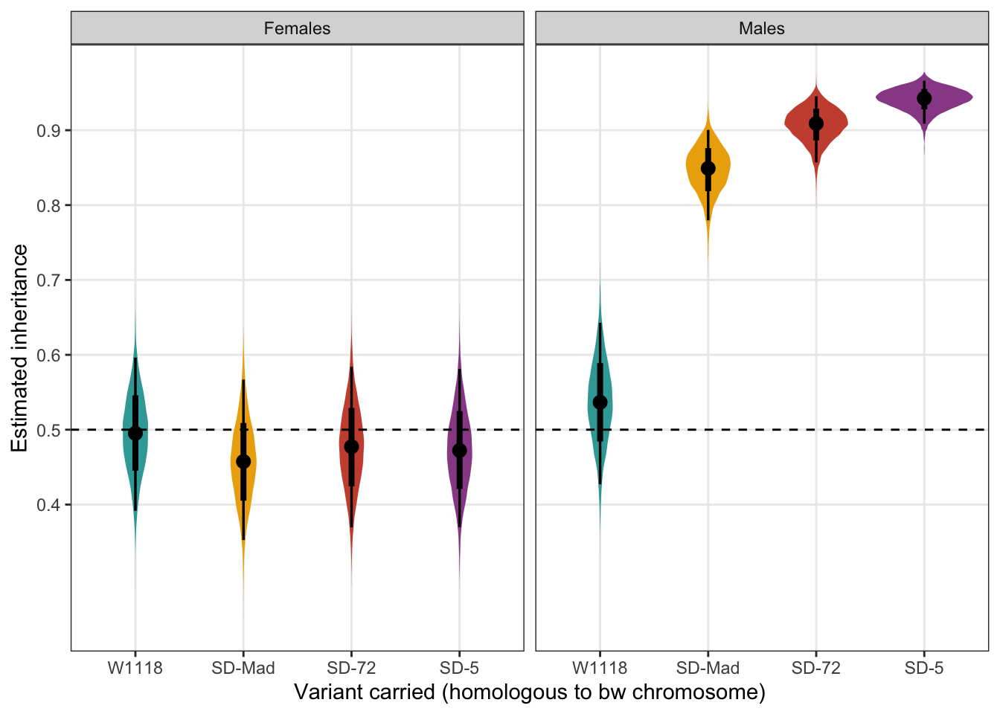
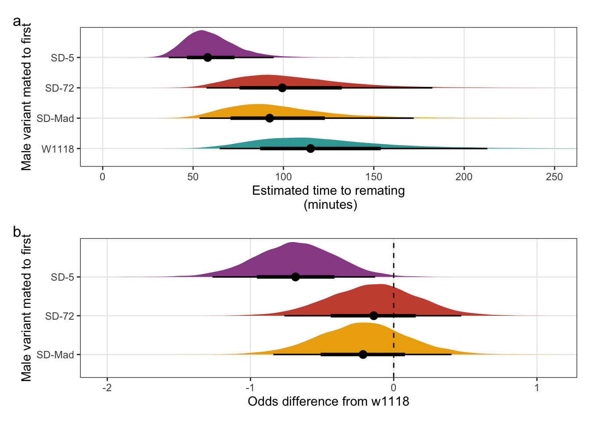
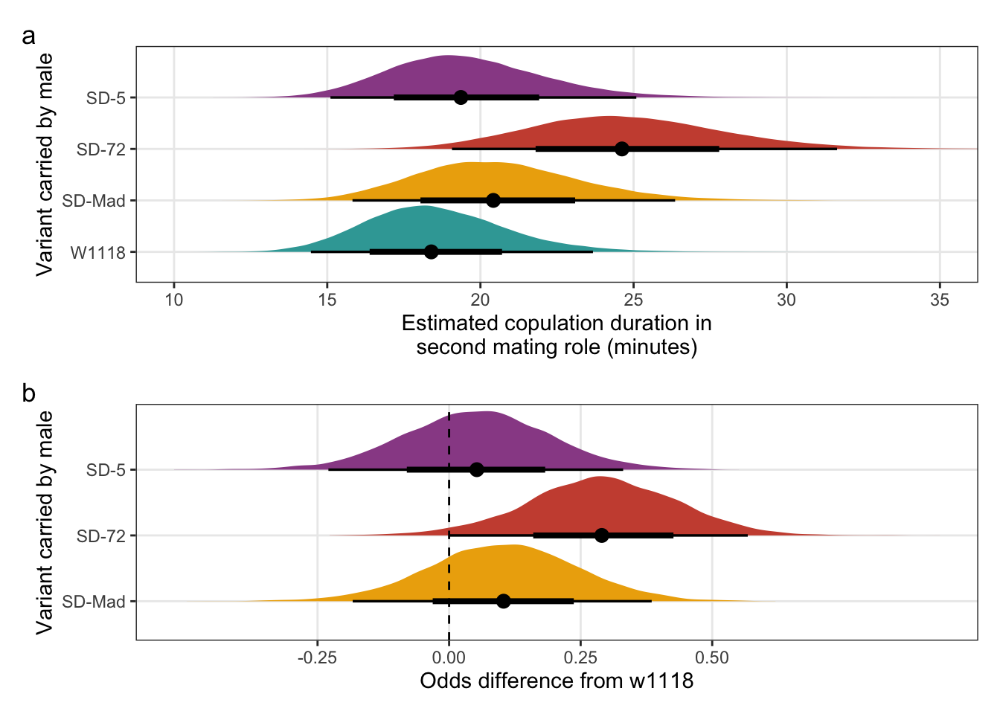
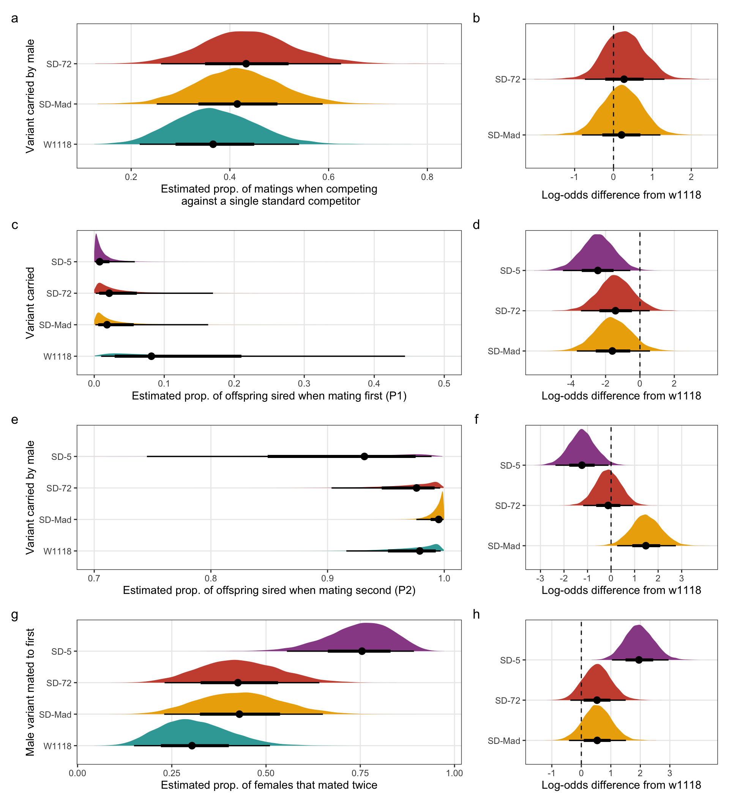

Sexual selection and the population genetics of a selfish gene
Empirical analysis
Thomas Keaney, Theresa Jones and Luke Holman
Last updated: 2021-06-02
Checks: 7 0
Knit directory: SD_sexual_selection/
This reproducible R Markdown analysis was created with workflowr (version 1.6.2). The Checks tab describes the reproducibility checks that were applied when the results were created. The Past versions tab lists the development history.
Great! Since the R Markdown file has been committed to the Git repository, you know the exact version of the code that produced these results.
Great job! The global environment was empty. Objects defined in the global environment can affect the analysis in your R Markdown file in unknown ways. For reproduciblity it’s best to always run the code in an empty environment.
The command set.seed(20200925) was run prior to running the code in the R Markdown file. Setting a seed ensures that any results that rely on randomness, e.g. subsampling or permutations, are reproducible.
Great job! Recording the operating system, R version, and package versions is critical for reproducibility.
Nice! There were no cached chunks for this analysis, so you can be confident that you successfully produced the results during this run.
Great job! Using relative paths to the files within your workflowr project makes it easier to run your code on other machines.
Great! You are using Git for version control. Tracking code development and connecting the code version to the results is critical for reproducibility.
The results in this page were generated with repository version 204ad92. See the Past versions tab to see a history of the changes made to the R Markdown and HTML files.
Note that you need to be careful to ensure that all relevant files for the analysis have been committed to Git prior to generating the results (you can use wflow_publish or wflow_git_commit). workflowr only checks the R Markdown file, but you know if there are other scripts or data files that it depends on. Below is the status of the Git repository when the results were generated:
Ignored files:
Ignored: .DS_Store
Ignored: .Rapp.history
Ignored: .Rhistory
Ignored: .Rproj.user/
Ignored: analysis/.DS_Store
Ignored: analysis/.Rapp.history
Unstaged changes:
Modified: SD_crossing_scheme.png
Modified: Supplementary_material.Rmd
Modified: Supplementary_material.pdf
Modified: analysis/_site.yml
Modified: analysis/index.Rmd
Note that any generated files, e.g. HTML, png, CSS, etc., are not included in this status report because it is ok for generated content to have uncommitted changes.
These are the previous versions of the repository in which changes were made to the R Markdown (analysis/Empirical_analysis.Rmd) and HTML (docs/Empirical_analysis.html) files. If you’ve configured a remote Git repository (see ?wflow_git_remote), click on the hyperlinks in the table below to view the files as they were in that past version.
| File | Version | Author | Date | Message |
|---|---|---|---|---|
| Rmd | 204ad92 | tkeaney | 2021-06-02 | final touches before submission |
| html | bfbb766 | tomkeaney | 2021-06-02 | Build site. |
| Rmd | 0289923 | tomkeaney | 2021-06-02 | Edits to make the manuscript smaller |
| html | b74026d | tkeaney | 2021-05-26 | Build site. |
| Rmd | 93c7c3a | tkeaney | 2021-05-26 | small fixes |
| html | f30258a | tkeaney | 2021-05-25 | Build site. |
| Rmd | 877c09b | tkeaney | 2021-05-25 | final updates before submission |
| html | e28d4c6 | tkeaney | 2021-05-25 | Build site. |
| html | ddaa2d1 | tkeaney | 2021-05-24 | Build site. |
| Rmd | 3565002 | tkeaney | 2021-05-24 | Publish the initial files for myproject |
Load packages and the data
library(tidyverse) # for data wrangling and plotting
library(reshape2) # for the melt function
library(brms) # for Bayesian models
library(tidybayes) # pretty Bayesian stuff
library(pander) # for slick tables
library(kableExtra) # for scrolling tables
library(lubridate) # working with times and durations
library(rcartocolor) # for nice colour palettes
library(patchwork) # for creating figures with multiple panels
library(workflowr) # for website building
library(DT) # for search- and saveable tables\(~\)
Load in the data from each of the experiments and prepare for analysis
# load the drive test data and create the total_female column
drive_test_data <-
read.csv("data/Drive_test.csv") %>%
mutate(total_female = SD.FEMALE + bw.FEMALE) %>%
as_tibble()
# reorder the factor levels for the SD variable, in ascending order of drive.
drive_test_data$SD <-
factor(drive_test_data$SD, levels = c("W1118", "MAD", "72", "5"))
drive_test_data <-
drive_test_data %>%
mutate(SEX = as.factor(SEX),
ID = as.factor(ID))
# Load in the data from Experiment 2. Remove unrequired columns, convert durations to a format that R can read, expressed in seconds, and log transform copulation latency.
precop_data <-
read.csv("data/two_choice_test_data.csv") %>%
select(-c(Mating_start_time, Mating_end_time)) %>%
mutate(Enter_time = as.numeric(hms(Enter_time)),
Copulation_latency = as.numeric(hms(Copulation_latency)),
Copulation_duration = as.numeric(hms(Copulation_duration)),
Rearing_vial = as.factor(Rearing_vial)) %>%
as_tibble()
# reorder the factor levels for the SD variable, in ascending order of drive
precop_data$SD <-
factor(precop_data$SD, levels = c("W1118", "MAD", "72"))
precop_duration_data <-
precop_data %>%
filter(Successful_male == "SD")
# read in the data from Experiment 3 and remove unrequired columns
postcop_data <-
read.csv("data/SD_mating_data.csv") %>%
select(- c(Start_1, Mating.start_1, Mating.end_1, Start_2, Mating.start_2, Mating.end_2)) %>%
as_tibble()
# reorder the factor levels for the SD variable, in ascending order of drive
postcop_data$SD <-
factor(postcop_data$SD, levels = c("W1118", "MAD", "72", "5"))
# First convert time data into readiable seconds. Then change the mating order variable so that SD is replaced with 'first' and LHM is replaced with 'second'. Add a censoring column, where 0 = the female remated and 1 = the female did not remate, which can be used in survival models. Finaly, create the total_offspring column and a mating duration difference column.
postcop_data <-
postcop_data %>%
# convert into readable seconds
mutate(Latency_1 = as.numeric(hms(Latency_1)),
Duration_1 = as.numeric(hms(Duration_1)),
Latency_2 = as.numeric(hms(Latency_2)),
Duration_2 = as.numeric(hms(Duration_2))) %>%
mutate(Mating.Order = if_else(Mating.Order == "SD", "first", "second"),
Censored = ifelse(Remating == "Y", 0, 1),
Block = as.factor(Block),
ID = as.factor(ID),
Rearing_vial = as.factor(Vial),
total_offspring = GFP.progeny + Treatment.progeny,
Mating_duration_diff = if_else(Mating.Order == "first", -1 * (Duration_2 - Duration_1), Duration_2 - Duration_1))
# create sperm comp data
# remove rows where we could not measure GFP progeny/treatment progeny or total offspring. This occurred when the female failed to mate with the 2nd male (hence there was no sperm competition), when a female escaped or died between mating opportunities, and rarely due to a data recording error. When the total number of offspring produced by a female = 0, we were unable to measure sperm competitive ability.
sperm_comp_data <-
postcop_data %>%
select(ID, Block, Mating.Order, Rearing_vial, SD, Treatment.progeny, GFP.progeny, total_offspring, Duration_1, Duration_2, Mating_duration_diff) %>%
filter(!is.na(GFP.progeny)) %>%
filter(!(total_offspring == 0))
# create remating data
# remove NAs corresponding to females that didn't mate in the first mating trial or that escaped or died and only include females that mated with SD males first
remating_data <-
postcop_data %>%
filter(!is.na(Remating),
Mating.Order == "first") %>%
select(ID, Block, Mating.Order, Rearing_vial, SD, Latency_1, Duration_1, Remating, Latency_2, Duration_2, Censored)\(~\)
Pilot experiment
Confirming that SD exhibits segregation distortion
\(~\)
Inspect the raw data
# Create a function to build HTML searchable tables
my_data_table <- function(df){
datatable(
df, rownames=FALSE,
autoHideNavigation = TRUE,
extensions = c("Scroller", "Buttons"),
options = list(
dom = 'Bfrtip',
deferRender=TRUE,
scrollX=TRUE, scrollY=400,
scrollCollapse=TRUE,
buttons =
list('pageLength', 'colvis', 'csv', list(
extend = 'pdf',
pageSize = 'A4',
orientation = 'landscape',
filename = 'Keaney_2021_Exp1_data')),
pageLength = 119
)
)
}
my_data_table(drive_test_data)\(~\)
Column explanations
ID: individual flies.
Day: offspring counts were conducted over two days.
Sex: the sex of the experimental individual.
SD: the variant of the SD allele (or control allele) the experimental individual carried, homologous to the second chromosome carrying the bw mutation.
SD.FEMALE: the number of adult female offspring with red eyes - indicating inheritance of the SD allele
SD.MALE: the number of adult male offspring with red eyes - indicating inheritance of the SD allele
bw.FEMALE: the number of adult female offspring with brown eyes - indicating inheritance of the bw allele
bw.MALE: the number of adult male offspring with brown eyes - indicating inheritance of the bw allele
white.MALE: the number of adult male offspring with white eyes (inheritance of the SD allele is unknown for these offspring when the experimental individual was female)
total_female: the total number of female offspring sired by the experimental individual.
\(~\)
Run the model and derive predictions
Parameter estimates for the fixed effects in the model are displayed on the log-odds scale.
drive_model <-
brm(SD.FEMALE | trials(total_female) ~ SEX * SD + (1|ID),
data = drive_test_data,
family = binomial,
prior = c(prior(normal(0, 5), class = Intercept),
prior(normal(0, 3), class = b)),
iter = 8000,
warmup = 2000,
chains = 4,
cores = 4,
seed = 2,
file = "fits/drive_model")
fixef(drive_model) %>%
pander(emphasize.strong.rows = c(6:8))| Estimate | Est.Error | Q2.5 | Q97.5 | |
|---|---|---|---|---|
| Intercept | -0.01973 | 0.2122 | -0.4401 | 0.39 |
| SEXM | 0.1677 | 0.3015 | -0.4168 | 0.7622 |
| SDMAD | -0.1516 | 0.3058 | -0.7506 | 0.46 |
| SD72 | -0.07362 | 0.3059 | -0.668 | 0.5179 |
| SD5 | -0.08937 | 0.3001 | -0.6763 | 0.5048 |
| SEXM:SDMAD | 1.734 | 0.4387 | 0.8901 | 2.624 |
| SEXM:SD72 | 2.235 | 0.4541 | 1.352 | 3.135 |
| SEXM:SD5 | 2.747 | 0.4451 | 1.888 | 3.628 |
Evaluate model fit using a posterior predictive check
A posterior predictive check works by using the model to predict the dataset upon which it was trained. Here, 11 draws are shown from the posterior predictive distribution (light blue), as well as the real dataset (dark blue). The datasets predicted from the model are reasonably similar to the real dataset, indicating that the model is a reasonably good fit.
pp_check(drive_model, type = "hist", nsamples = 11, binwidth = 2) +
theme_minimal() +
theme(panel.background = element_blank())
\(~\)
Get model predictions
# Define new data for prediction
new <-
expand.grid(total_female = 100, SD = unique(drive_test_data$SD), SEX = unique(drive_test_data$SEX)) %>%
mutate(Var1 = 1:8)
# Define new data for prediction with posteriors
new_posterior <-
expand.grid(total_female = 100, SD = unique(drive_test_data$SD), SEX = unique(drive_test_data$SEX)) %>%
mutate(id = paste("V", 1:8, sep = "")) %>%
as_tibble()
# Get the summarised predicted means
predictions <-
left_join(
melt(fitted(drive_model, newdata = new, re_formula = NA)) %>%
spread(Var2, value), new, by = "Var1") %>%
rename(Sex = SEX, `k - the estimated inheritance (%)` = Estimate) %>%
select(-c(Var1, total_female)) %>%
select(SD, Sex, `k - the estimated inheritance (%)`, Est.Error, Q2.5, Q97.5)
# Now get the predicted posterior
posterior_prediction <-
as_tibble(fitted(drive_model, newdata = new_posterior, re_formula = NA, summary = FALSE)) %>% # 8 cols, 8000ish rows
mutate(posterior_draw = 1:n()) %>%
tidyr::gather(key = id, value = percent_focal_offspring, -posterior_draw) %>%
left_join(new_posterior %>% select(-total_female), by = "id") %>%
select(-id) %>%
as_tibble()\(~\)
The percentage of female offspring that inherited an SD allele from a heterozygous parent k, split by the sex of the parent. SD only drives when present in males. n = 14-15 for all groups.
predictions %>%
mutate(`Variant carried` = recode(predictions$SD, "MAD" = "SD-Mad", "72" = "SD-72", "5" = "SD-5"),
Sex = recode(predictions$Sex, "F" = "Female", "M" = "Male")) %>%
select(`Variant carried`, everything(), -SD) %>%
pander(split.cell = 40, split.table = Inf, round = 2)| Variant carried | Sex | k - the estimated inheritance (%) | Est.Error | Q2.5 | Q97.5 |
|---|---|---|---|---|---|
| SD-5 | Female | 47.31 | 5.39 | 36.99 | 58.11 |
| SD-72 | Female | 47.7 | 5.47 | 36.96 | 58.38 |
| SD-Mad | Female | 45.78 | 5.46 | 35.26 | 56.7 |
| W1118 | Female | 49.51 | 5.25 | 39.17 | 59.63 |
| SD-5 | Male | 94.13 | 1.47 | 90.88 | 96.61 |
| SD-72 | Male | 90.72 | 2.24 | 85.7 | 94.54 |
| SD-Mad | Male | 84.7 | 3.1 | 77.96 | 90.04 |
| W1118 | Male | 53.65 | 5.5 | 42.72 | 64.28 |
posterior_prediction %>%
mutate(SD = recode(posterior_prediction$SD, "MAD" = "SD-Mad", "72" = "SD-72", "5" = "SD-5"),
SEX = recode(posterior_prediction$SEX, "F" = "Females", "M" = "Males")) %>%
ggplot(aes(SD, percent_focal_offspring)) +
stat_eye(aes(fill = SD), .width = c(0.66, 0.95)) + # width indicates the uncertainty intervals: here we have 66% and 95% intervals
scale_fill_manual(values = c("W1118" = "#d3f2a3", "SD-Mad" = "#97e196", "SD-72" = "#6cc08b", "SD-5" = "#4c9b82")) +
geom_hline(yintercept = 50, linetype = 2) +
facet_wrap( ~ SEX) +
scale_y_continuous("Estimated inheritance (%)",
breaks = c(40, 50, 60, 70, 80, 90)) +
xlab("Variant carried (homologous to bw chromosome)") +
theme_bw() +
theme(legend.position = "none",
panel.grid.minor = element_blank())
| Version | Author | Date |
|---|---|---|
| bfbb766 | tomkeaney | 2021-06-02 |
Figure S2: The estimated percentage of female offspring that inherited an SD allele from a heterozygous parent, split by the sex of the parent. Black points indicate the estimated mean with associated 66 and 95% uncertainty intervals, while coloured area shows the posterior distribution. The dotted line indicates 50% inheritance; the expectation in the absence of segregation distortion.
\(~\)
From these predictions we can calculate viability corrected estimates of k using the formula presented in Temin (1991, Genetics).
kc = number of SD progeny / (number of SD progeny + (number of bw progeny / W ))
Where W represents the transmission of the SD allele through females and is defined by:
W = number of bw progeny / number of SD progeny
kc values are presented in the table below
\(~\)
Table S2: the viability corrected inheritance of each SD variant and the control allele from a SD/+ (or +/+) male.
post <- posterior_samples(drive_model) %>%
as_tibble()
k_c_SD5 <-
post %>%
select(b_Intercept, b_SD5, `b_SEXM:SD5`) %>%
mutate(Female_SD_progeny = inv_logit_scaled(b_Intercept + b_SD5) * 100,
Female_bw_progeny = 100 - Female_SD_progeny,
W_SD5 = Female_bw_progeny / Female_SD_progeny,
Male_SD_progeny = inv_logit_scaled(b_Intercept + `b_SEXM:SD5`) * 100,
Male_bw_progeny = 100 - Male_SD_progeny) %>%
select(Male_SD_progeny, Male_bw_progeny, W_SD5) %>%
mutate(k_c = Male_SD_progeny / (Male_SD_progeny + (Male_bw_progeny / W_SD5))) %>%
summarise(`k corrected for viability costs` = median(k_c),
`Q2.5%` = quantile(k_c, probs = 0.025),
`Q97.5%` = quantile(k_c, probs = 0.975)) %>%
mutate(`Variant carried` = "SD-5")
k_c_SD72 <-
post %>%
select(b_Intercept, b_SD72, `b_SEXM:SD72`) %>%
mutate(Female_SD_progeny = inv_logit_scaled(b_Intercept + b_SD72) * 100,
Female_bw_progeny = 100 - Female_SD_progeny,
W_SD72 = Female_bw_progeny / Female_SD_progeny,
Male_SD_progeny = inv_logit_scaled(b_Intercept + `b_SEXM:SD72`) * 100,
Male_bw_progeny = 100 - Male_SD_progeny) %>%
select(Male_SD_progeny, Male_bw_progeny, W_SD72) %>%
mutate(k_c = Male_SD_progeny / (Male_SD_progeny + (Male_bw_progeny / W_SD72))) %>%
summarise(`k corrected for viability costs` = median(k_c),
`Q2.5%` = quantile(k_c, probs = 0.025),
`Q97.5%` = quantile(k_c, probs = 0.975)) %>%
mutate(`Variant carried` = "SD-72")
k_c_SDMAD <-
post %>%
select(b_Intercept, b_SDMAD, `b_SEXM:SDMAD`) %>%
mutate(Female_SD_progeny = inv_logit_scaled(b_Intercept + b_SDMAD) * 100,
Female_bw_progeny = 100 - Female_SD_progeny,
W_SDMAD = Female_bw_progeny / Female_SD_progeny,
Male_SD_progeny = inv_logit_scaled(b_Intercept + `b_SEXM:SDMAD`) * 100,
Male_bw_progeny = 100 - Male_SD_progeny) %>%
select(Male_SD_progeny, Male_bw_progeny, W_SDMAD) %>%
mutate(k_c = Male_SD_progeny / (Male_SD_progeny + (Male_bw_progeny / W_SDMAD))) %>%
summarise(`k corrected for viability costs` = median(k_c),
`Q2.5%` = quantile(k_c, probs = 0.025),
`Q97.5%` = quantile(k_c, probs = 0.975)) %>%
mutate(`Variant carried` = "SD-Mad")
k_c_W1118 <-
post %>%
select(b_Intercept, b_SEXM) %>%
mutate(Female_W1118_progeny = inv_logit_scaled(b_Intercept) * 100,
Female_bw_progeny = 100 - Female_W1118_progeny,
W_W1118 = Female_bw_progeny / Female_W1118_progeny,
Male_W1118_progeny = inv_logit_scaled(b_Intercept + b_SEXM) * 100,
Male_bw_progeny = 100 - Male_W1118_progeny) %>%
select(Male_W1118_progeny, Male_bw_progeny, W_W1118) %>%
mutate(k_c = Male_W1118_progeny / (Male_W1118_progeny + (Male_bw_progeny / W_W1118))) %>%
summarise(`k corrected for viability costs` = median(k_c),
`Q2.5%` = quantile(k_c, probs = 0.025),
`Q97.5%` = quantile(k_c, probs = 0.975)) %>%
mutate(`Variant carried` = "W1118")
bind_rows(k_c_SD5, k_c_SD72, k_c_SDMAD, k_c_W1118) %>%
select(`Variant carried`, everything()) %>%
pander(round = 3)| Variant carried | k corrected for viability costs | Q2.5% | Q97.5% |
|---|---|---|---|
| SD-5 | 0.944 | 0.818 | 0.985 |
| SD-72 | 0.909 | 0.724 | 0.975 |
| SD-Mad | 0.868 | 0.634 | 0.963 |
| W1118 | 0.542 | 0.397 | 0.682 |
\(~\)
Experiment 1
Testing the mating success of SD/+ males in the presence of a competitor
\(~\)
Inspect the raw data
# Create a function to build HTML searchable tables
my_data_table <- function(df){
datatable(
df, rownames=FALSE,
autoHideNavigation = TRUE,
extensions = c("Scroller", "Buttons"),
options = list(
dom = 'Bfrtip',
deferRender=TRUE,
scrollX=TRUE, scrollY=400,
scrollCollapse=TRUE,
buttons =
list('pageLength', 'colvis', 'csv', list(
extend = 'pdf',
pageSize = 'A4',
orientation = 'landscape',
filename = 'Keaney_2021_Exp2_data')),
pageLength = 130
)
)
}
my_data_table(precop_data)\(~\)
Column explanations
ID: individual flies.
SD: the variant of the SD allele (or control allele) the experimental individual carried, homologous to the second chromosome carrying the bw mutation.
Rearing_vial: the vial the individual male developed in. This variable is included to capture variation explained by the rearing environment e.g. small differences in food moisture content or quantity.
Experiment_start: I started data collection for Experiment 2 on the 10/12/2020 at 09:42 AEDT - lights were turned on at 07:00 AEDT.
Enter_time: the time in seconds after the start of the experiment that a female was introduced into a vial containing a SD/+ or control (w1118) male and a LBw male e.g. a value of 270 indicates that the female was added to the vial 270 seconds after the start of the experiment.
Copulation_latency: the time in seconds from a females entrance to a vial to the onset of copulation (Mating_start_time - Enter_time).
Copulation_duration: the time in seconds that the female mated with one of the two males (Mating_end_time - Mating_start_time).
Successful_male: the male that successfully mated with the female
Mating_occurred: did the female mate with one of the two males before the experiment ended?
Finish_time: the time in hms at which the Experiment ended.
\(~\)
Mating success
\(~\)
Here we model mating success as a YES/No response variable.
\(~\)
Run the model and derive predictions
Parameter estimates for the fixed effects in the model are displayed on the log-odds scale.
precop_success_model <-
brm(Successful_male ~ SD + (1 | Rearing_vial),
data = precop_data,
family = bernoulli,
prior = c(prior(normal(0, 5), class = Intercept),
prior(normal(0, 3), class = b)),
iter = 8000,
warmup = 2000,
chains = 4,
cores = 4,
seed = 2,
file = "fits/precop_success_model")
fixef(precop_success_model) %>%
pander()| Estimate | Est.Error | Q2.5 | Q97.5 | |
|---|---|---|---|---|
| Intercept | -0.5512 | 0.3672 | -1.282 | 0.1607 |
| SDMAD | 0.2022 | 0.5175 | -0.8132 | 1.201 |
| SD72 | 0.2804 | 0.5311 | -0.7346 | 1.325 |
Evaluate model fit using a posterior predictive check
A posterior predictive check works by using the model to predict the dataset upon which it was trained. Here, 11 draws are shown from the posterior predictive distribution (light blue), as well as the real dataset (dark blue). The datasets predicted from the model are reasonably similar to the real dataset, indicating that the model is a reasonably good fit.
pp_check(precop_success_model, type = "hist", nsamples = 11, binwidth = 0.5) +
theme_minimal() +
theme(panel.background = element_blank())
\(~\)
Get predictions from the model
# Define new data for prediction with posteriors
new_posterior_precop_success <-
expand.grid(SD = unique(precop_data$SD)) %>%
mutate(id = paste("V", 1:3, sep = "")) %>%
as_tibble()
# Get predicted means
predictions_precop_success <-
as.data.frame(fitted(precop_success_model, newdata = new_posterior_precop_success, re_formula = NA, summary = FALSE)) %>% # 12 cols, 8000ish rows
mutate(posterior_draw = 1:n()) %>%
gather(key = id, value = prop_SD_success, -posterior_draw) %>%
left_join(new_posterior_precop_success, by = "id") %>%
select(-id) %>%
mutate(percent_SD_success = prop_SD_success * 100) %>%
as_tibble() %>%
group_by(SD) %>%
summarise(`Estimated % of males mating` = median(percent_SD_success),
`2.5%` = quantile(percent_SD_success, probs = 0.025),
`97.5%` = quantile(percent_SD_success, probs = 0.975))
# Now get the predicted posterior
posterior_prediction_precop_success <-
as.data.frame(fitted(precop_success_model, newdata = new_posterior_precop_success, re_formula = NA, summary = FALSE)) %>% # 12 cols, 8000ish rows
mutate(posterior_draw = 1:n()) %>%
gather(key = id, value = prop_SD_success, -posterior_draw) %>%
left_join(new_posterior_precop_success, by = "id") %>%
select(-id) %>%
mutate(percent_SD_success = prop_SD_success * 100) %>%
as_tibble()\(~\)
The estimated percentage of SD/+ or control males that successfully mated with a female when competing with a single LBw male.
predictions_precop_success %>%
mutate(`Variant carried` = recode(predictions_precop_success$SD, "MAD" = "SD-Mad", "72" = "SD-72")) %>%
select(`Variant carried`, everything(), -SD) %>%
pander(split.cell = 40, split.table = Inf)| Variant carried | Estimated % of males mating | 2.5% | 97.5% |
|---|---|---|---|
| W1118 | 36.6 | 21.73 | 54.01 |
| SD-Mad | 41.5 | 25.18 | 58.79 |
| SD-72 | 43.28 | 26.04 | 62.52 |
# get posterior samples
post_ms <- posterior_samples(precop_success_model)
# now find the differences between the reference level (w1118) and the remaining levels (the SD lines)
# the inv_logit_scaled() function converts the posterior draws onto the response scale
post_diff_ms <- post_ms %>%
mutate(p_w1118 = inv_logit_scaled(b_Intercept),
p_SD_MAD = inv_logit_scaled(b_SDMAD + b_Intercept),
p_SD_72 = inv_logit_scaled(b_SD72 + b_Intercept),
`SD-Mad` = p_SD_MAD / p_w1118,
`SD-72` = p_SD_72 / p_w1118) %>%
gather(key = `difference comparison`, value = `% difference`) %>%
filter(`difference comparison` == c("SD-Mad", "SD-72"))The mating success of SD/+ males relative to the w1118 control males. A value of 2 means that SD/+ males were twice as successful as w1118 control males.
# Create a table summarising the proportions of offspring sired relative to w1118
post_diff_ms %>%
group_by(`difference comparison`) %>%
summarise(`Mating success relative to w1118` = mean(`% difference`),
`2.5%` = quantile(`% difference`, probs = 0.025),
`97.5%` = quantile(`% difference`, probs = 0.975)) %>%
rename(`SD-variant` = `difference comparison`) %>%
pander(split.cell = 40, split.table = Inf, round = 2)| SD-variant | Mating success relative to w1118 | 2.5% | 97.5% |
|---|---|---|---|
| SD-72 | 1.24 | 0.64 | 2.25 |
| SD-Mad | 1.19 | 0.61 | 2.08 |
\(~\)
Creating Figure 1a and b
\(~\)
Panel a
mean_mating_success_plot <-
posterior_prediction_precop_success %>%
mutate(SD = recode(posterior_prediction_precop_success$SD, "MAD" = "SD-Mad", "72" = "SD-72")) %>%
ggplot(aes(SD, percent_SD_success)) +
stat_halfeye(aes(fill = SD), .width = c(0.66, 0.95)) + # width indicates the uncertainty intervals: here we have 66% and 95% intervals
scale_fill_manual(values = c("W1118" = "#d3f2a3", "SD-Mad" = "#97e196", "SD-72" = "#6cc08b")) +
coord_flip() +
ylab("Estimated mating success (%) when competing\n against a single standard competitor") +
xlab("Variant carried by male") +
theme_bw() +
theme(legend.position = "none",
panel.grid.minor = element_blank())Panel b
Mating_success_logodds <-
post_ms %>%
mutate(`SD-Mad` = b_SDMAD,
`SD-72` = b_SD72) %>%
gather(key = parameter, value = logodds) %>%
filter(parameter == c("SD-Mad", "SD-72")) %>%
as_tibble() %>%
mutate(parameter =factor(parameter, levels=c("SD-Mad", "SD-72"))) %>%
ggplot(aes(parameter, logodds)) +
stat_halfeye(aes(fill = parameter), .width = c(0.66, 0.95)) + # width indicates the uncertainty intervals: here we have 66% and 95% intervals
scale_fill_manual(values = c("SD-Mad" = "#97e196", "SD-72" = "#6cc08b", "SD-5" = "#4c9b82")) +
coord_flip() +
geom_hline(yintercept = 0, linetype = 2) +
scale_y_continuous(breaks = c(-1, 0, 1, 2, 3)) +
xlab(NULL) +
ylab("Log-odds difference from w1118") +
theme_bw() +
theme(legend.position = "none",
panel.grid.minor = element_blank()) \(~\)
Mating latency
\(~\)
Here we take a more in depth look at mating success by looking at mating latency - the duration between a female’s introduction to the competing males’ vial and the onset of copulation.
Fit the model using mating latency as the response variable and specifying a weibull distribution (a time-to-event model).
Fixed effects are shown on the odds scale (the weibull model uses a log-link function rather than a logit-link function)
# Fit the model
mating_latency_survival_model<-
brm(Copulation_latency ~ SD + (1|Rearing_vial),
data = precop_duration_data,
prior = c(prior(normal(0, 5), class = Intercept),
prior(normal(0, 3), class = b)),
family = weibull, inits = 0,
cores = 4, chains = 4, iter = 8000, warmup = 2000,
control = list(adapt_delta = 0.99, max_treedepth = 10),
seed = 1, file = "fits/mating_latency_survival_model")
# display model results
fixef(mating_latency_survival_model) %>%
pander()| Estimate | Est.Error | Q2.5 | Q97.5 | |
|---|---|---|---|---|
| Intercept | 7.946 | 0.2658 | 7.426 | 8.484 |
| SDMAD | -0.6498 | 0.3659 | -1.364 | 0.08986 |
| SD72 | -0.4926 | 0.3682 | -1.218 | 0.2387 |
Evaluate model fit using a posterior predictive check
A posterior predictive check works by using the model to predict the dataset upon which it was trained. Here, 11 draws are shown from the posterior predictive distribution (light blue), as well as the real dataset (dark blue). The datasets predicted from the model are reasonably similar to the real dataset, indicating that the model is a reasonably good fit.
pp_check(mating_latency_survival_model, type = "hist", nsamples = 11, binwidth = 1500) +
theme_minimal() +
theme(panel.background = element_blank())
\(~\)
Get predictions from the model
# Define new data for prediction with posteriors
new_posterior_mating_latency <-
expand.grid(SD = unique(precop_duration_data$SD)) %>%
mutate(id = paste("V", 1:3, sep = "")) %>%
as_tibble()
# Get predicted means
predictions_mating_latency <-
as.data.frame(fitted(mating_latency_survival_model, newdata = new_posterior_mating_latency, re_formula = NA, summary = FALSE)) %>% # 12 cols, 8000ish rows
mutate(posterior_draw = 1:n()) %>%
gather(key = id, value = mean_mating_latency, -posterior_draw) %>%
mutate(mean_mating_latency = mean_mating_latency / 60) %>%
left_join(new_posterior_mating_latency, by = "id") %>%
select(-id) %>%
as_tibble() %>%
group_by(SD) %>%
summarise(`Estimated time to mating (mins)` = median(mean_mating_latency),
`2.5%` = quantile(mean_mating_latency, probs = 0.025),
`97.5%` = quantile(mean_mating_latency, probs = 0.975))
# Now get the predicted posterior
posterior_prediction_mating_latency <-
as.data.frame(fitted(mating_latency_survival_model, newdata = new_posterior_mating_latency, re_formula = NA, summary = FALSE)) %>% # 12 cols, 8000ish rows
mutate(posterior_draw = 1:n()) %>%
gather(key = id, value = mean_mating_latency, -posterior_draw) %>%
mutate(mean_mating_latency = mean_mating_latency / 60) %>% # if we want to express in secs then delete this
left_join(new_posterior_mating_latency, by = "id") %>%
select(-id) %>%
as_tibble()\(~\)
The mean time taken for SD/+ or control males to mate with a LHm female.
predictions_mating_latency %>%
mutate(`Variant carried` = recode(predictions_mating_latency$SD, "MAD" = "SD-Mad", "72" = "SD-72")) %>%
select(`Variant carried`, everything(), -SD) %>%
pander(split.cell = 40, split.table = Inf, round = 0)| Variant carried | Estimated time to mating (mins) | 2.5% | 97.5% |
|---|---|---|---|
| W1118 | 47 | 28 | 81 |
| SD-Mad | 24 | 15 | 41 |
| SD-72 | 29 | 17 | 49 |
# get posterior samples
post_ml <- posterior_samples(mating_latency_survival_model) %>%
as_tibble()
# now find the differences between the reference level (w1118) and the remaining levels (the SD lines)
# the exp() function converts the posterior draws onto the response scale
post_diff_ml <- post_ml %>%
mutate(p_w1118 = exp(b_Intercept),
p_SD_MAD = exp(b_SDMAD + b_Intercept),
p_SD_72 = exp(b_SD72 + b_Intercept),
`SD-Mad` = p_SD_MAD / p_w1118,
`SD-72` = p_SD_72 / p_w1118) %>%
gather(key = `difference comparison`, value = proportion) %>%
filter(`difference comparison` == c("SD-Mad", "SD-72"))The mean mating latency of males that successfully mated with LHm females when competing against Lbw males, relative to the w1118 control males. A value of 0.5 means that males mated in half the time of w1118 males.
# Create a table summarising the proportions of offspring sired relative to w1118
post_diff_ml %>%
group_by(`difference comparison`) %>%
summarise(`Mean mating latency relative to w1118` = mean(proportion),
`2.5%` = quantile(proportion, probs = 0.025),
`97.5%` = quantile(proportion, probs = 0.975)) %>%
rename(`SD-variant` = `difference comparison`) %>%
pander(split.cell = 40, split.table = Inf, round = 2)| SD-variant | Mean mating latency relative to w1118 | 2.5% | 97.5% |
|---|---|---|---|
| SD-72 | 0.66 | 0.3 | 1.27 |
| SD-Mad | 0.56 | 0.26 | 1.09 |
\(~\)
Creating Figure S3
\(~\)
Panel a
mean_mating_latency_plot <-
posterior_prediction_mating_latency %>%
mutate(SD = recode(posterior_prediction_mating_latency$SD, "MAD" = "SD-Mad", "72" = "SD-72", "5" = "SD-5")) %>%
ggplot(aes(SD, mean_mating_latency)) +
stat_halfeye(aes(fill = SD), .width = c(0.66, 0.95)) + # width indicates the uncertainty intervals: here we have 66% and 95% intervals
scale_fill_manual(values = c("W1118" = "#d3f2a3", "SD-Mad" = "#97e196", "SD-72" = "#6cc08b", "SD-5" = "#4c9b82")) +
coord_flip(ylim = c(0, 100)) +
ylab("Estimated time to mating\n (minutes)") +
xlab("Variant carried by male") +
theme_bw() +
theme(legend.position = "none",
panel.grid.minor = element_blank())Panel b
mating_latency_odds <-
post_ml %>%
mutate(`SD-Mad` = b_SDMAD,
`SD-72` = b_SD72) %>%
gather(key = parameter, value = logodds) %>%
filter(parameter == c("SD-Mad", "SD-72")) %>%
as_tibble() %>%
mutate(parameter =factor(parameter, levels=c("SD-Mad", "SD-72"))) %>%
ggplot(aes(parameter, logodds)) +
stat_halfeye(aes(fill = parameter), .width = c(0.66, 0.95)) + # width indicates the uncertainty intervals: here we have 66% and 95% intervals
scale_fill_manual(values = c("SD-Mad" = "#97e196", "SD-72" = "#6cc08b", "SD-5" = "#4c9b82")) +
coord_flip() +
geom_hline(yintercept = 0, linetype = 2) +
scale_y_continuous("Odds difference from w1118",
breaks = c(-2, -1, 0, 1)) +
xlab("Variant carried by male") +
theme_bw() +
theme(legend.position = "none",
panel.grid.minor = element_blank()) Combine panels into a single plot
mean_mating_latency_plot /
mating_latency_odds + plot_annotation(tag_levels = "a")
| Version | Author | Date |
|---|---|---|
| bfbb766 | tomkeaney | 2021-06-02 |
Figure S3: The duration required for an SD/+ male to mate with a LHm female and how this compares to w1118 control males. Panel a shows the estimated mating latency for SD/+ and control males. Panel b shows effect sizes on the odds scale for the SD variants. Negative values indicate that SD/+ males mated faster than w1118 control males. Black points indicate the estimated mean with associated 66 and 95% uncertainty intervals, while coloured area shows the posterior distribution.
\(~\)
Copulation duration
\(~\)
Here we take a more in depth look at mating success by looking at copulation duration - an indicator of male investment in mating.
Fit the model using copulation duration as the response variable and specifying a weibull distribution (a time-to-event model).
Fixed effects are shown on the odds scale (the weibull model uses a log-link function rather than a logit-link function)
copulation_duration_survival_model<-
brm(Copulation_duration ~ SD + (1|Rearing_vial),
data = precop_duration_data,
prior = c(prior(normal(0, 5), class = Intercept),
prior(normal(0, 3), class = b)),
family = weibull, inits = 0,
cores = 4, chains = 4, iter = 8000, warmup = 2000,
control = list(adapt_delta = 0.99, max_treedepth = 10),
seed = 1, file = "fits/copulation_duration_survival_model")
# display model results
fixef(copulation_duration_survival_model) %>%
pander()| Estimate | Est.Error | Q2.5 | Q97.5 | |
|---|---|---|---|---|
| Intercept | 7.176 | 0.05795 | 7.062 | 7.289 |
| SDMAD | -0.008013 | 0.07812 | -0.1619 | 0.1437 |
| SD72 | -0.009322 | 0.07935 | -0.1649 | 0.1495 |
Evaluate model fit using a posterior predictive check
A posterior predictive check works by using the model to predict the dataset upon which it was trained. Here, 11 draws are shown from the posterior predictive distribution (light blue), as well as the real dataset (dark blue). The datasets predicted from the model are reasonably similar to the real dataset, indicating that the model is a reasonably good fit.
pp_check(copulation_duration_survival_model, type = "hist", nsamples = 11, binwidth = 200) +
theme_minimal() +
theme(panel.background = element_blank())
\(~\)
Get predictions from the model
# Define new data for prediction with posteriors
new_posterior_copulation_duration <-
expand.grid(SD = unique(precop_duration_data$SD)) %>%
mutate(id = paste("V", 1:3, sep = "")) %>%
as_tibble()
# Get predicted means
predictions_copulation_duration <-
as.data.frame(fitted(copulation_duration_survival_model, newdata = new_posterior_copulation_duration, re_formula = NA, summary = FALSE)) %>% # 12 cols, 8000ish rows
mutate(posterior_draw = 1:n()) %>%
gather(key = id, value = mean_copulation_duration, -posterior_draw) %>%
mutate(mean_copulation_duration = mean_copulation_duration / 60) %>%
left_join(new_posterior_copulation_duration, by = "id") %>%
select(-id) %>%
as_tibble() %>%
group_by(SD) %>%
summarise(`Estimated copulation duration (mins)` = median(mean_copulation_duration),
`2.5%` = quantile(mean_copulation_duration, probs = 0.025),
`97.5%` = quantile(mean_copulation_duration, probs = 0.975))
# Now get the predicted posterior
posterior_prediction_copulation_duration <-
as.data.frame(fitted(copulation_duration_survival_model, newdata = new_posterior_copulation_duration, re_formula = NA, summary = FALSE)) %>% # 12 cols, 8000ish rows
mutate(posterior_draw = 1:n()) %>%
gather(key = id, value = mean_copulation_duration, -posterior_draw) %>%
mutate(mean_copulation_duration = mean_copulation_duration / 60) %>% # if we want to express in secs then delete this
left_join(new_posterior_copulation_duration, by = "id") %>%
select(-id) %>%
as_tibble()\(~\)
The mean copulation duration when a SD/+ or control male mated with a LHm female.
predictions_copulation_duration %>%
mutate(`Variant carried` = recode(predictions_copulation_duration$SD, "MAD" = "SD-Mad", "72" = "SD-72")) %>%
select(`Variant carried`, everything(), -SD) %>%
pander(split.cell = 40, split.table = Inf, round = 1)| Variant carried | Estimated copulation duration (mins) | 2.5% | 97.5% |
|---|---|---|---|
| W1118 | 21.8 | 19.5 | 24.4 |
| SD-Mad | 21.6 | 19.3 | 24.1 |
| SD-72 | 21.6 | 19.4 | 24.2 |
# get posterior samples
post_cd <- posterior_samples(copulation_duration_survival_model) %>%
as_tibble()
# now find the differences between the reference level (w1118) and the remaining levels (the SD lines)
# the inv_logit_scaled() function converts the posterior draws onto the response scale
post_diff_cd <- post_cd %>%
mutate(p_w1118 = exp(b_Intercept),
p_SD_MAD = exp(b_SDMAD + b_Intercept),
p_SD_72 = exp(b_SD72 + b_Intercept),
`SD-Mad` = p_SD_MAD / p_w1118,
`SD-72` = p_SD_72 / p_w1118) %>%
gather(key = `difference comparison`, value = proportion) %>%
filter(`difference comparison` == c("SD-Mad", "SD-72"))The mean copulation duration for SD/+ males that successfully mated with LHm females when competing against Lbw males, relative to the w1118 control males. A value of 0.5 means that males mated in half the time of w1118 males.
# Create a table summarising the proportions of offspring sired relative to w1118
post_diff_cd %>%
group_by(`difference comparison`) %>%
summarise(`Mean copulation duration relative to w1118` = mean(proportion),
`2.5%` = quantile(proportion, probs = 0.025),
`97.5%` = quantile(proportion, probs = 0.975)) %>%
rename(`SD-variant` = `difference comparison`) %>%
pander(split.cell = 40, split.table = Inf, round = 3)| SD-variant | Mean copulation duration relative to w1118 | 2.5% | 97.5% |
|---|---|---|---|
| SD-72 | 0.993 | 0.849 | 1.162 |
| SD-Mad | 0.995 | 0.851 | 1.157 |
\(~\)
Creating Figure S4
\(~\)
Panel a
mean_copulation_duration_plot <-
posterior_prediction_copulation_duration %>%
mutate(SD = recode(posterior_prediction_copulation_duration$SD, "MAD" = "SD-Mad", "72" = "SD-72", "5" = "SD-5")) %>%
ggplot(aes(SD, mean_copulation_duration)) +
stat_halfeye(aes(fill = SD), .width = c(0.66, 0.95)) + # width indicates the uncertainty intervals: here we have 66% and 95% intervals
scale_fill_manual(values = c("W1118" = "#d3f2a3", "SD-Mad" = "#97e196", "SD-72" = "#6cc08b", "SD-5" = "#4c9b82")) +
coord_flip(ylim = c(15, 30)) +
ylab("Estimated copulation duration\n (minutes)") +
xlab("Variant carried by male") +
theme_bw() +
theme(legend.position = "none",
panel.grid.minor = element_blank())Panel b
copulation_duration_odds <-
post_cd %>%
mutate(`SD-Mad` = b_SDMAD,
`SD-72` = b_SD72) %>%
gather(key = parameter, value = odds) %>%
filter(parameter == c("SD-Mad", "SD-72")) %>%
as_tibble() %>%
mutate(parameter =factor(parameter, levels=c("SD-Mad", "SD-72"))) %>%
ggplot(aes(parameter, odds)) +
stat_halfeye(aes(fill = parameter), .width = c(0.66, 0.95)) + # width indicates the uncertainty intervals: here we have 66% and 95% intervals
scale_fill_manual(values = c("SD-Mad" = "#97e196", "SD-72" = "#6cc08b", "SD-5" = "#4c9b82")) +
coord_flip() +
geom_hline(yintercept = 0, linetype = 2) +
scale_y_continuous("Odds difference from w1118",
breaks = c(-0.25, 0, 0.25)) +
xlab("Variant carried by male") +
theme_bw() +
theme(legend.position = "none",
panel.grid.minor = element_blank()) Combine panels into a single plot
mean_copulation_duration_plot /
(copulation_duration_odds) + plot_annotation(tag_levels = "a")
| Version | Author | Date |
|---|---|---|
| bfbb766 | tomkeaney | 2021-06-02 |
Figure S4: No difference in the duration of mating between a SD/+ male and a LHm female, compared to w1118 control males. Panel a shows the estimated copulation duration for SD/+ and control males. Panel b shows effect sizes on the odds scale for the SD variants. Positive values indicate that SD/+ males mated for longer than w1118 control males. Black points indicate the estimated mean with associated 66 and 95% uncertainty intervals, while coloured area shows the posterior distribution.
\(~\)
Experiment 2
Testing sperm competitive success and female remating frequency
\(~\)
Inspect the raw data
# Create a function to build HTML searchable tables
my_data_table <- function(df){
datatable(
df, rownames=FALSE,
autoHideNavigation = TRUE,
extensions = c("Scroller", "Buttons"),
options = list(
dom = 'Bfrtip',
deferRender=TRUE,
scrollX=TRUE, scrollY=400,
scrollCollapse=TRUE,
buttons =
list('pageLength', 'colvis', 'csv', list(
extend = 'pdf',
pageSize = 'A4',
orientation = 'landscape',
filename = 'Keaney_2021_Exp3_data')),
pageLength = 442
)
)
}
my_data_table(postcop_data %>%
filter(Remating != "NA") %>%
select(ID, Block, Mating.Order, Rearing_vial, SD, Latency_1, Duration_1, Remating, Latency_2, Duration_2, Mating_duration_diff, Treatment.progeny, GFP.progeny, total_offspring, Censored)) \(~\)
Column explanations
ID: identifier for individual flies.
Block: the experiment was replicated on three consecutive generations of flies, over a 6 week period.
Mating.Order: did the SD/+ male mate with the female first or second?
Rearing_vial: the vial within which the individual developed in.
SD: the variant of the SD allele (or control allele) the experimental individual carried.
Latency_1: the time in seconds between the male entering the mating vial and the onset of the first mating.
Duration_1: the time in seconds between the onset and end of the first mating.
Remating: did the female remate within the three hour period, four days after her first mating.
Latency_2: the time in minutes between the male entering the mating vial and the onset of the second mating.
Duration_2: the time in minutes between the onset and end of the second mating.
Treatment.progeny: the number of larvae sired by the SD/+ or control male. These larvae did not inherit the UBI GFP construct and therefore did not express green fluorescence.
GFP.progeny: the number of larvae sired by the LHmUBU competitor male. These larvae inherited the UBI GFP construct and therefore expressed green fluorescence.
total_offspring: the total number of offspring counted in each vial.
Censored: Identical to remating column except in a 1/0 format for survival model right censoring. 1 = the female remated within three hours, 0 = the female did not remate.
\(~\)
A rough look at sperm precedence
Take a glance at how mating order affected fertilisation success
sperm_comp_data %>%
group_by(Mating.Order) %>%
summarise(total_SD = sum(Treatment.progeny),
total_GFP = sum(GFP.progeny),
total = sum(total_offspring),
`Number of mating trios` = n()) %>%
mutate(Mating.Order = if_else(Mating.Order == "first", "SD/+ male mated first", "LHm-UBI male mated first")) %>%
mutate(`% offspring sired by first mate` = if_else(Mating.Order == "SD/+ male mated first", total_SD / total * 100, total_GFP / total * 100)) %>%
rename(`Mating Order` = Mating.Order,
`Offspring sired by SD/+ males` = total_SD,
`Offspring sired by LHm males` = total_GFP,
`Total offspring sired` = total) %>%
select(`Mating Order`, `Number of mating trios`, everything()) %>%
pander(split.cell = 40, split.table = Inf)| Mating Order | Number of mating trios | Offspring sired by SD/+ males | Offspring sired by LHm males | Total offspring sired | % offspring sired by first mate |
|---|---|---|---|---|---|
| SD/+ male mated first | 97 | 294 | 2545 | 2839 | 10.36 |
| LHm-UBI male mated first | 130 | 4011 | 308 | 4319 | 7.131 |
\(~\)
Measuring P1
Fit the model.
Parameter estimates for the fixed effects in the model are displayed on the log-odds scale.
# filter so that only trials where the SD male mated with the female first are included
sperm_comp_data_P1 <-
sperm_comp_data %>%
filter(Mating.Order == "first") %>%
mutate(Mating_duration_diff = as.numeric(Mating_duration_diff))
# fit the model
sperm_comp_model_P1 <- brm(Treatment.progeny | trials(total_offspring) ~ SD + Block + (1|Rearing_vial) + (1|ID),
data = sperm_comp_data_P1,
family = binomial,
prior = c(prior(normal(0, 5), class = Intercept),
prior(normal(0, 3), class = b)),
iter = 8000,
warmup = 2000,
chains = 4,
cores = 4,
seed = 2,
control = list(adapt_delta = 0.99, max_treedepth = 15),
file = "fits/sperm_comp_model_P1")
# display model results
fixef(sperm_comp_model_P1) %>%
pander(emphasize.strong.rows = 4)| Estimate | Est.Error | Q2.5 | Q97.5 | |
|---|---|---|---|---|
| Intercept | -1.802 | 1.006 | -3.806 | 0.1443 |
| SDMAD | -1.572 | 1.071 | -3.671 | 0.5493 |
| SD72 | -1.421 | 1.025 | -3.453 | 0.5931 |
| SD5 | -2.465 | 0.9809 | -4.462 | -0.5663 |
| Block2 | -0.3604 | 1.024 | -2.349 | 1.659 |
| Block3 | -1.482 | 0.952 | -3.396 | 0.3335 |
Evaluate model fit using a posterior predictive check
A posterior predictive check works by using the model to predict the dataset upon which it was trained. Here, 11 draws are shown from the posterior predictive distribution (light blue), as well as the real dataset (dark blue). The datasets predicted from the model are reasonably similar to the real dataset, indicating that the model is a reasonably good fit.
pp_check(sperm_comp_model_P1, type = "hist", nsamples = 11, binwidth = 2) +
theme_minimal() +
theme(panel.background = element_blank())
\(~\)
Get predictions from the P1 model
# Define new data for prediction with posteriors
new_posterior_P1 <-
expand.grid(total_offspring = 100, SD = c("W1118", "MAD", "72", "5"), Block = unique(sperm_comp_data_P1$Block)) %>%
mutate(id = paste("V", 1:12, sep = "")) %>%
as_tibble()
predictions_P1 <-
as.data.frame(fitted(sperm_comp_model_P1, newdata = new_posterior_P1, re_formula = NA, summary = FALSE)) %>% # 12 cols, 8000ish rows
mutate(posterior_draw = 1:n()) %>%
gather(key = id, value = percent_focal_offspring, -posterior_draw) %>%
left_join(new_posterior_P1, by = "id") %>%
select(-id) %>%
as_tibble() %>%
group_by(SD) %>%
summarise(`Estimated % of offspring sired` = median(percent_focal_offspring),
`2.5%` = quantile(percent_focal_offspring, probs = 0.025),
`97.5%` = quantile(percent_focal_offspring, probs = 0.975))
# Now get the predicted posterior but don't summarise
posterior_prediction_P1 <-
as.data.frame(fitted(sperm_comp_model_P1, newdata = new_posterior_P1, re_formula = NA, summary = FALSE)) %>% # 12 cols, 8000ish rows
mutate(posterior_draw = 1:n()) %>%
gather(key = id, value = percent_focal_offspring, -posterior_draw) %>%
left_join(new_posterior_P1, by = "id") %>%
select(-id) %>%
as_tibble()\(~\)
The estimated percentage of offspring sired by SD/+ or control males, when they mated first.
predictions_P1 %>%
mutate(`Variant carried` = recode(predictions_P1$SD, "MAD" = "SD-Mad", "72" = "SD-72", "5" = "SD-5")) %>%
select(`Variant carried`, everything(), -SD) %>%
pander(split.cell = 40, split.table = Inf, round = 2)| Variant carried | Estimated % of offspring sired | 2.5% | 97.5% |
|---|---|---|---|
| W1118 | 8.17 | 0.99 | 44.4 |
| SD-Mad | 1.83 | 0.17 | 16.28 |
| SD-72 | 2.15 | 0.21 | 16.97 |
| SD-5 | 0.78 | 0.08 | 5.79 |
# get posterior samples
post_P1 <-
posterior_samples(sperm_comp_model_P1) %>%
as_tibble()
# now find the differences between the reference level (w1118) and the remaining levels (the SD lines)
# the inv_logit_scaled() function converts the posterior draws onto the response scale
post_diff_P1 <-
post_P1 %>%
mutate(p_w1118 = inv_logit_scaled(b_Intercept),
p_SD_MAD = inv_logit_scaled(b_SDMAD + b_Intercept),
p_SD_72 = inv_logit_scaled(b_SD72 + b_Intercept),
p_SD_5 = inv_logit_scaled(b_SD5 + b_Intercept),
`SD-Mad` = p_SD_MAD / p_w1118,
`SD-72` = p_SD_72 / p_w1118,
`SD-5` = p_SD_5 / p_w1118) %>%
gather(key = `difference comparison`, value = `% difference`) %>%
filter(`difference comparison` == c("SD-Mad", "SD-72", "SD-5"))The mean proportion of offspring sired by each SD variant relative to the w1118 control, when these males mated with LHm females first. A value of 0.5 means that the proportion of offspring sired was half that of w1118 males.
# Create a table summarising the proportions of offspring sired relative to w1118
post_diff_P1 %>%
group_by(`difference comparison`) %>%
summarise(`Mean proportion of offspring sired relative to w1118` = mean(`% difference`),
`2.5%` = quantile(`% difference`, probs = 0.025),
`97.5%` = quantile(`% difference`, probs = 0.975)) %>%
rename(`SD-variant` = `difference comparison`) %>%
pander(split.cell = 40, split.table = Inf, round = 2)| SD-variant | Mean proportion of offspring sired relative to w1118 | 2.5% | 97.5% |
|---|---|---|---|
| SD-5 | 0.15 | 0.02 | 0.6 |
| SD-72 | 0.43 | 0.05 | 1.65 |
| SD-Mad | 0.39 | 0.04 | 1.7 |
\(~\)
Creating Figure 1c and d
\(~\)
Panel c
mean_P1_plot <-
posterior_prediction_P1 %>%
mutate(SD = recode(posterior_prediction_P1$SD, "MAD" = "SD-Mad", "72" = "SD-72", "5" = "SD-5")) %>%
ggplot(aes(SD, percent_focal_offspring)) +
stat_halfeye(aes(fill = SD), .width = c(0.66, 0.95)) + # width indicates the uncertainty intervals: here we have 66% and 95% intervals
scale_fill_manual(values = c("SD-5" = "#4c9b82", "SD-72" = "#6cc08b", "SD-Mad" = "#97e196", "W1118" = "#d3f2a3")) +
coord_flip(ylim = c(0, 50)) +
ylab("Estimated % of offspring sired when mating first (P1)") +
xlab("Variant carried") +
theme_bw() +
theme(legend.position = "none",
panel.grid.minor = element_blank())Panel d
P1_logodds <-
post_P1 %>%
mutate(`SD-5` = b_SD5,
`SD-72` = b_SD72,
`SD-Mad` = b_SDMAD) %>%
gather(key = parameter, value = logodds) %>%
filter(parameter == c("SD-Mad", "SD-72", "SD-5")) %>%
as_tibble() %>%
mutate(parameter =factor(parameter, levels=c("SD-Mad", "SD-72", "SD-5"))) %>%
ggplot(aes(parameter, logodds)) +
stat_halfeye(aes(fill = parameter), .width = c(0.66, 0.95)) + # width indicates the uncertainty intervals: here we have 66% and 95% intervals
scale_fill_manual(values = c("SD-Mad" = "#97e196", "SD-72" = "#6cc08b", "SD-5" = "#4c9b82")) +
coord_flip() +
geom_hline(yintercept = 0, linetype = 2) +
scale_y_continuous(breaks = c(-4, -2, 0, 2)) +
xlab(NULL) +
ylab("Log-odds difference from w1118") +
theme_bw() +
theme(legend.position = "none",
panel.grid.minor = element_blank()) \(~\)
Measuring P2
\(~\)
Fit the model.
Parameter estimates for the fixed effects in the model are displayed on the log-odds scale.
# Filter so that only trials where the SD male mated with the female second are included
sperm_comp_data_P2 <-
sperm_comp_data %>%
filter(Mating.Order == "second")
# fit the model
sperm_comp_model_P2 <- brm(Treatment.progeny | trials(total_offspring) ~ SD + Block + (1|Rearing_vial) + (1|ID),
data = sperm_comp_data_P2,
family = binomial,
prior = c(prior(normal(0, 5), class = Intercept),
prior(normal(0, 3), class = b)),
iter = 8000,
warmup = 2000,
chains = 4,
cores = 4,
seed = 2,
control = list(adapt_delta = 0.999, max_treedepth = 15),
file = "fits/sperm_comp_model_P2")
# display model results
fixef(sperm_comp_model_P2) %>%
pander(emphasize.strong.rows = c(2, 4))| Estimate | Est.Error | Q2.5 | Q97.5 | |
|---|---|---|---|---|
| Intercept | 3.828 | 0.4994 | 2.875 | 4.84 |
| SDMAD | 1.498 | 0.6331 | 0.289 | 2.764 |
| SD72 | -0.1273 | 0.5419 | -1.201 | 0.924 |
| SD5 | -1.247 | 0.5699 | -2.378 | -0.1209 |
| Block2 | -0.7958 | 0.4789 | -1.727 | 0.1544 |
| Block3 | 1.101 | 0.5725 | -0.01236 | 2.23 |
Evaluate model fit using a posterior predictive check
A posterior predictive check works by using the model to predict the dataset upon which it was trained. Here, 11 draws are shown from the posterior predictive distribution (light blue), as well as the real dataset (dark blue). The datasets predicted from the model are reasonably similar to the real dataset, indicating that the model is a reasonably good fit.
pp_check(sperm_comp_model_P2, type = "hist", nsamples = 11, binwidth = 2) +
theme_minimal() +
theme(panel.background = element_blank())
\(~\)
Get predictions from the P2 model
# Define new data for prediction with posteriors
new_posterior_P2 <-
expand.grid(total_offspring = 100, SD = c("W1118", "MAD", "72", "5"), Block = unique(sperm_comp_data_P2$Block)) %>%
mutate(id = paste("V", 1:12, sep = "")) %>%
as_tibble()
# Get predicted means
predictions_P2 <-
as.data.frame(fitted(sperm_comp_model_P2, newdata = new_posterior_P2, re_formula = NA, summary = FALSE)) %>% # 12 cols, 8000ish rows
mutate(posterior_draw = 1:n()) %>%
gather(key = id, value = percent_focal_offspring, -posterior_draw) %>%
left_join(new_posterior_P2, by = "id") %>%
select(-id) %>%
as_tibble() %>%
group_by(SD) %>%
summarise(`Estimated % of offspring sired` = median(percent_focal_offspring),
`2.5%` = quantile(percent_focal_offspring, probs = 0.025),
`97.5%` = quantile(percent_focal_offspring, probs = 0.975))
# Now get the predicted posterior
posterior_prediction_P2 <-
as.data.frame(fitted(sperm_comp_model_P2, newdata = new_posterior_P2, re_formula = NA, summary = FALSE)) %>% # 12 cols, 8000ish rows
mutate(posterior_draw = 1:n()) %>%
gather(key = id, value = percent_focal_offspring, -posterior_draw) %>%
left_join(new_posterior_P2, by = "id") %>%
select(-id) %>%
as_tibble()\(~\)
The estimated percentage of offspring sired by SD/+ or control males, when they mated second.
predictions_P2 %>%
mutate(`Variant carried` = recode(predictions_P2$SD, "MAD" = "SD-Mad", "72" = "SD-72", "5" = "SD-5")) %>%
select(`Variant carried`, everything(), -SD) %>%
pander(split.cell = 40, split.table = Inf, round = 2)| Variant carried | Estimated % of offspring sired | 2.5% | 97.5% |
|---|---|---|---|
| W1118 | 97.9 | 91.61 | 99.7 |
| SD-Mad | 99.52 | 97.61 | 99.94 |
| SD-72 | 97.63 | 90.34 | 99.65 |
| SD-5 | 93.16 | 74.51 | 98.91 |
\(~\)
# get posterior samples
post_P2 <- posterior_samples(sperm_comp_model_P2)
# now find the differences between the reference level (w1118) and the remaining levels (the SD lines)
# the inv_logit_scaled() function converts the posterior draws onto the response scale
post_diff_P2 <- post_P2 %>%
mutate(p_w1118 = inv_logit_scaled(b_Intercept),
p_SD_MAD = inv_logit_scaled(b_SDMAD + b_Intercept),
p_SD_72 = inv_logit_scaled(b_SD72 + b_Intercept),
p_SD_5 = inv_logit_scaled(b_SD5 + b_Intercept),
`SD-Mad` = p_SD_MAD / p_w1118,
`SD-72` = p_SD_72 / p_w1118,
`SD-5` = p_SD_5 / p_w1118) %>%
gather(key = `difference comparison`, value = `% difference`) %>%
filter(`difference comparison` == c("SD-Mad", "SD-72", "SD-5")) The mean proportion of offspring sired by each SD variant relative to the w1118 control, when these males mated with LHm females second. A value of 0.5 means that the proportion of offspring sired was half that of w1118 males.
# Create a table summarising the proportions of offspring sired relative to w1118
post_diff_P2 %>%
group_by(`difference comparison`) %>%
summarise(`Mean proportion of offspring sired relative to w1118` = mean(`% difference`),
`2.5%` = quantile(`% difference`, probs = 0.025),
`97.5%` = quantile(`% difference`, probs = 0.975)) %>%
rename(`SD-variant` = `difference comparison`) %>%
pander(split.cell = 40, split.table = Inf, round = 3)| SD-variant | Mean proportion of offspring sired relative to w1118 | 2.5% | 97.5% |
|---|---|---|---|
| SD-5 | 0.945 | 0.855 | 0.997 |
| SD-72 | 0.997 | 0.969 | 1.027 |
| SD-Mad | 1.019 | 1.002 | 1.049 |
\(~\)
Creating Figure 1e and f
\(~\)
Panel e
mean_P2_plot <-
posterior_prediction_P2 %>%
mutate(SD = recode(posterior_prediction_P2$SD, "MAD" = "SD-Mad", "72" = "SD-72", "5" = "SD-5")) %>%
ggplot(aes(SD, percent_focal_offspring)) +
stat_halfeye(aes(fill = SD), .width = c(0.66, 0.95)) + # width indicates the uncertainty intervals: here we have 66% and 95% intervals
scale_fill_manual(values = c("W1118" = "#d3f2a3", "SD-Mad" = "#97e196", "SD-72" = "#6cc08b", "SD-5" = "#4c9b82")) +
coord_flip(ylim = c(70, 100)) +
ylab("Estimated % of offspring sired when mating second (P2)") +
xlab("Variant carried by male") +
theme_bw() +
theme(legend.position = "none",
panel.grid.minor = element_blank())Panel f
P2_logodds <-
post_P2 %>%
mutate(`SD-Mad` = b_SDMAD,
`SD-72` = b_SD72,
`SD-5` = b_SD5) %>%
gather(key = parameter, value = logodds) %>%
filter(parameter == c("SD-Mad", "SD-72", "SD-5")) %>%
as_tibble() %>%
mutate(parameter =factor(parameter, levels=c("SD-Mad", "SD-72", "SD-5"))) %>%
ggplot(aes(parameter, logodds)) +
stat_halfeye(aes(fill = parameter), .width = c(0.66, 0.95)) + # width indicates the uncertainty intervals: here we have 66% and 95% intervals
scale_fill_manual(values = c("SD-Mad" = "#97e196", "SD-72" = "#6cc08b", "SD-5" = "#4c9b82")) +
coord_flip() +
geom_hline(yintercept = 0, linetype = 2) +
scale_y_continuous(breaks = c(-3, -2, -1, 0, 1, 2, 3)) +
xlab(NULL) +
ylab("Log-odds difference from w1118") +
theme_bw() +
theme(legend.position = "none",
panel.grid.minor = element_blank()) \(~\)
Are females that mate first with a male harbouring SD more likely to remate?
\(~\)
Fit the model - here we model remating as a binary YES/NO response.
remating_model <-
brm(Remating ~ SD + Block + (1|Rearing_vial),
data = remating_data,
family = bernoulli,
prior = c(prior(normal(0, 5), class = Intercept),
prior(normal(0, 3), class = b)),
iter = 8000,
warmup = 2000,
chains = 4,
cores = 4,
seed = 2,
control = list(adapt_delta = 0.99),
file = "fits/remating_model")
# display model results
fixef(remating_model) %>%
pander(emphasize.strong.rows = 4)| Estimate | Est.Error | Q2.5 | Q97.5 | |
|---|---|---|---|---|
| Intercept | -0.8325 | 0.4563 | -1.737 | 0.04211 |
| SDMAD | 0.5413 | 0.4877 | -0.419 | 1.511 |
| SD72 | 0.5333 | 0.479 | -0.3908 | 1.493 |
| SD5 | 1.968 | 0.4963 | 1.027 | 2.978 |
| Block2 | -0.8197 | 0.4633 | -1.733 | 0.08466 |
| Block3 | 0.7758 | 0.4474 | -0.09273 | 1.672 |
Evaluate model fit using a posterior predictive check
A posterior predictive check works by using the model to predict the dataset upon which it was trained. Here, 11 draws are shown from the posterior predictive distribution (light blue), as well as the real dataset (dark blue). The outcome variable in this model is binary, hence why only 0 and 1 values appear. The datasets predicted from the model are reasonably similar to the real dataset, indicating that the model is a reasonably good fit.
pp_check(remating_model, type = "hist", nsamples = 11, binwidth = 0.5) +
theme_minimal() +
theme(panel.background = element_blank())
\(~\)
Get predictions from the model
# Define new data for prediction with posteriors
new_posterior_remating <-
expand.grid(SD = unique(remating_data$SD), Block = unique(remating_data$Block)) %>%
mutate(id = paste("V", 1:12, sep = "")) %>%
as_tibble()
# Get predicted means
predictions_remating <-
as.data.frame(fitted(remating_model, newdata = new_posterior_remating, re_formula = NA, summary = FALSE)) %>% # 12 cols, 8000ish rows
mutate(posterior_draw = 1:n()) %>%
gather(key = id, value = prop_females_remating, -posterior_draw) %>%
left_join(new_posterior_remating, by = "id") %>%
select(-id) %>%
mutate(percent_females_remating = prop_females_remating * 100) %>%
as_tibble() %>%
group_by(SD, Block) %>%
summarise(`Estimated % of mates remating` = median(percent_females_remating),
`2.5%` = quantile(percent_females_remating, probs = 0.025),
`97.5%` = quantile(percent_females_remating, probs = 0.975))
# Now get the predicted posterior
posterior_prediction_remating <-
as.data.frame(fitted(remating_model, newdata = new_posterior_remating, re_formula = NA, summary = FALSE)) %>% # 12 cols, 8000ish rows
mutate(posterior_draw = 1:n()) %>%
gather(key = id, value = prop_females_remating, -posterior_draw) %>%
left_join(new_posterior_remating, by = "id") %>%
select(-id) %>%
mutate(percent_females_remating = prop_females_remating * 100) %>%
as_tibble()\(~\)
The estimated percentage of females that remated that were first mated to a SD/+ or control male.
predictions_remating %>%
mutate(`Variant carried` = SD) %>%
mutate(`Variant carried` = recode(SD, "MAD" = "SD-Mad", "72" = "SD-72", "5" = "SD-5")) %>%
ungroup() %>%
select(`Variant carried`, everything(), -SD) %>%
pander(split.cell = 40, split.table = Inf)| Variant carried | Block | Estimated % of mates remating | 2.5% | 97.5% |
|---|---|---|---|---|
| W1118 | 1 | 30.36 | 14.97 | 51.05 |
| W1118 | 2 | 16.22 | 7.473 | 29.98 |
| W1118 | 3 | 48.62 | 30.85 | 66.63 |
| SD-Mad | 1 | 42.93 | 22.99 | 65.09 |
| SD-Mad | 2 | 24.9 | 11.75 | 43.87 |
| SD-Mad | 3 | 61.8 | 41.97 | 78.74 |
| SD-72 | 1 | 42.54 | 23.09 | 64.14 |
| SD-72 | 2 | 24.72 | 11.72 | 43.59 |
| SD-72 | 3 | 61.53 | 41.95 | 78.84 |
| SD-5 | 1 | 75.46 | 55.54 | 89.24 |
| SD-5 | 2 | 57.68 | 39.09 | 75.63 |
| SD-5 | 3 | 86.97 | 74.02 | 94.58 |
# get posterior samples
post_r <- posterior_samples(remating_model)
# now find the differences between the reference level (w1118) and the remaining levels (the SD lines)
# the inv_logit_scaled() function converts the posterior draws onto the response scale
post_diff_r <- post_r %>%
mutate(p_w1118 = inv_logit_scaled(b_Intercept),
p_SD_MAD = inv_logit_scaled(b_SDMAD + b_Intercept),
p_SD_72 = inv_logit_scaled(b_SD72 + b_Intercept),
p_SD_5 = inv_logit_scaled(b_SD5 + b_Intercept),
`SD-Mad` = p_SD_MAD / p_w1118,
`SD-72` = p_SD_72 / p_w1118,
`SD-5` = p_SD_5 / p_w1118) %>%
gather(key = `difference comparison`, value = `% difference`) %>%
filter(`difference comparison` == c("SD-Mad", "SD-72", "SD-5"))The mean proportion of mates remating with LHmUBI males for SD/+ males relative to the w1118 control males. A value of 2 means that remating was twice as likely when females initially mated with a SD/+ male compared with a w1118 male.
# Create a table summarising the proportions of offspring sired relative to w1118
post_diff_r %>%
group_by(`difference comparison`) %>%
summarise(`Mean proportion of mates remating relative to w1118` = mean(`% difference`),
`2.5%` = quantile(`% difference`, probs = 0.025),
`97.5%` = quantile(`% difference`, probs = 0.975)) %>%
rename(`SD-variant` = `difference comparison`) %>%
pander(split.cell = 40, split.table = Inf, round = 2)| SD-variant | Mean proportion of mates remating relative to w1118 | 2.5% | 97.5% |
|---|---|---|---|
| SD-5 | 2.61 | 1.52 | 4.66 |
| SD-72 | 1.47 | 0.79 | 2.65 |
| SD-Mad | 1.48 | 0.77 | 2.65 |
\(~\)
Creating Figure 1g and h
\(~\)
Panel g
mean_remating_plot <-
posterior_prediction_remating %>%
mutate(SD = recode(posterior_prediction_remating$SD, "MAD" = "SD-Mad", "72" = "SD-72", "5" = "SD-5")) %>%
filter(Block == "1") %>% # here we select data from the first block to make the plot look nicer - this doesn't affect the differences between each SD variant and the control, it just shrinks the uncertainty that occurs because of differences between blocks
ggplot(aes(SD, percent_females_remating)) +
stat_halfeye(aes(fill = SD), .width = c(0.66, 0.95)) + # width indicates the uncertainty intervals: here we have 66% and 95% intervals
scale_fill_manual(values = c("W1118" = "#d3f2a3", "SD-Mad" = "#97e196", "SD-72" = "#6cc08b", "SD-5" = "#4c9b82")) +
coord_flip() +
ylab("Estimated % of females that mated twice") +
xlab("Male variant mated to first") +
theme_bw() +
theme(legend.position = "none",
panel.grid.minor = element_blank())Panel h
Remating_logodds <-
post_r %>%
mutate(`SD-Mad` = b_SDMAD,
`SD-72` = b_SD72,
`SD-5` = b_SD5) %>%
gather(key = parameter, value = logodds) %>%
filter(parameter == c("SD-Mad", "SD-72", "SD-5")) %>%
as_tibble() %>%
mutate(parameter =factor(parameter, levels=c("SD-Mad", "SD-72", "SD-5"))) %>%
ggplot(aes(parameter, logodds)) +
stat_halfeye(aes(fill = parameter), .width = c(0.66, 0.95)) + # width indicates the uncertainty intervals: here we have 66% and 95% intervals
scale_fill_manual(values = c("SD-Mad" = "#97e196", "SD-72" = "#6cc08b", "SD-5" = "#4c9b82")) +
coord_flip() +
geom_hline(yintercept = 0, linetype = 2) +
scale_y_continuous("Log-odds difference from w1118",
breaks = c(-1, 0, 1, 2, 3)) +
xlab(NULL) +
theme_bw() +
theme(legend.position = "none",
panel.grid.minor = element_blank()) \(~\)
Remating latency
\(~\)
Here we take a more in depth look at remating by looking at remating latency within the three hour remating period.
Fit the model - this time using remating latency as the response variable and specifying a weibull distribution (a time-to-event model).
Fixed effects are shown on the odds scale (the weibull model uses a log-link function rather than a logit-link function)
# Fit the model with right censoring
remating_survival_model_censored <-
brm(Latency_2 | cens(Censored) ~ SD + Block + (1|Rearing_vial),
data = remating_data,
prior = c(prior(normal(0, 5), class = Intercept),
prior(normal(0, 3), class = b)),
family = weibull, inits = 0,
cores = 4, chains = 4, iter = 8000, warmup = 2000,
control = list(adapt_delta = 0.95, max_treedepth = 10),
seed = 1, file = "fits/remating_survival_model_censored")
# display model results
fixef(remating_survival_model_censored) %>%
pander(emphasize.strong.rows = 4:5)| Estimate | Est.Error | Q2.5 | Q97.5 | |
|---|---|---|---|---|
| Intercept | 8.846 | 0.3019 | 8.265 | 9.455 |
| SDMAD | -0.215 | 0.3167 | -0.8382 | 0.4079 |
| SD72 | -0.1452 | 0.3137 | -0.7689 | 0.4681 |
| SD5 | -0.6866 | 0.2866 | -1.263 | -0.1422 |
| Block2 | 0.645 | 0.2874 | 0.08167 | 1.217 |
| Block3 | -0.09898 | 0.2633 | -0.6337 | 0.4039 |
Evaluate model fit using a posterior predictive check
A posterior predictive check works by using the model to predict the dataset upon which it was trained. Here, 11 draws are shown from the posterior predictive distribution (light blue), as well as the real dataset (dark blue). The datasets predicted from the model are reasonably similar to the real dataset, indicating that the model is a reasonably good fit.
pp_check(remating_survival_model_censored, type = "hist", nsamples = 11, binwidth = 600) +
theme_minimal() +
theme(panel.background = element_blank())
\(~\)
Get predictions from the model
# Define new data for prediction with posteriors
new_posterior_remating_latency <-
expand.grid(SD = unique(remating_data$SD), Block = unique(remating_data$Block)) %>%
mutate(id = paste("V", 1:12, sep = "")) %>%
as_tibble()
# Get predicted means
predictions_remating_latency <-
as.data.frame(fitted(remating_survival_model_censored, newdata = new_posterior_remating_latency, re_formula = NA, summary = FALSE)) %>% # 12 cols, 8000ish rows
mutate(posterior_draw = 1:n()) %>%
gather(key = id, value = avg_remating_latency, -posterior_draw) %>%
left_join(new_posterior_remating_latency, by = "id") %>%
select(-id) %>%
as_tibble() %>%
group_by(SD, Block) %>%
summarise(`Estimated time to remating (mins)` = median(avg_remating_latency) / 60,
`2.5%` = quantile(avg_remating_latency, probs = 0.025) / 60,
`97.5%` = quantile(avg_remating_latency, probs = 0.975) / 60)
# Now get the predicted posterior
posterior_prediction_remating_latency <-
as.data.frame(fitted(remating_survival_model_censored, newdata = new_posterior_remating_latency, re_formula = NA, summary = FALSE)) %>% # 12 cols, 8000ish rows
mutate(posterior_draw = 1:n()) %>%
gather(key = id, value = avg_remating_latency, -posterior_draw) %>%
left_join(new_posterior_remating_latency, by = "id") %>%
mutate(avg_remating_latency = avg_remating_latency / 60) %>%
select(-id) %>%
as_tibble()\(~\)
The estimated time taken for females to remate, when provided with an opportunity, four days after initially mating with a SD/+ or control male.
predictions_remating_latency %>%
#mutate(`Variant carried` = SD) %>%
mutate(`Variant carried` = fct_recode(SD, "SD-Mad" = "MAD", "SD-72" = "72", "SD-5" = "5")) %>%
ungroup() %>%
select(`Variant carried`, Block, `Estimated time to remating (mins)`, `2.5%`, `97.5%`) %>%
pander(split.cell = 40, split.table = Inf, round = 1)| Variant carried | Block | Estimated time to remating (mins) | 2.5% | 97.5% |
|---|---|---|---|---|
| W1118 | 1 | 115 | 64.8 | 212.8 |
| W1118 | 2 | 218.3 | 127.4 | 402.6 |
| W1118 | 3 | 104.6 | 65.5 | 169.7 |
| SD-Mad | 1 | 92.4 | 53.6 | 172.1 |
| SD-Mad | 2 | 176.1 | 100.4 | 332.5 |
| SD-Mad | 3 | 84.3 | 53.2 | 136.9 |
| SD-72 | 1 | 99.4 | 57.4 | 182.4 |
| SD-72 | 2 | 188.9 | 114.9 | 332.9 |
| SD-72 | 3 | 90.5 | 55.2 | 149.7 |
| SD-5 | 1 | 58.1 | 36.6 | 94.6 |
| SD-5 | 2 | 110.6 | 71.2 | 176 |
| SD-5 | 3 | 52.9 | 33.6 | 81.9 |
# get posterior samples
post_l <- posterior_samples(remating_survival_model_censored) %>%
as_tibble()
# now find the differences between the reference level (w1118) and the remaining levels (the SD lines)
# the inv_logit_scaled() function converts the posterior draws onto the response scale
post_diff_l <- post_l %>%
mutate(p_w1118 = exp(b_Intercept),
p_SD_MAD = exp(b_SDMAD + b_Intercept),
p_SD_72 = exp(b_SD72 + b_Intercept),
p_SD_5 = exp(b_SD5 + b_Intercept),
`SD-Mad` = p_SD_MAD / p_w1118,
`SD-72` = p_SD_72 / p_w1118,
`SD-5` = p_SD_5 / p_w1118) %>%
gather(key = `difference comparison`, value = proportion) %>%
filter(`difference comparison` == c("SD-Mad", "SD-72", "SD-5"))The mean remating latency of females that initially mated with SD/+ males, relative to the w1118 control males. A value of 0.5 means that females remated in half the time of females that initially mated with a w1118 male.
# Create a table summarising the proportions of offspring sired relative to w1118
post_diff_l %>%
group_by(`difference comparison`) %>%
summarise(`Mean remating latency relative to w1118` = mean(proportion),
`2.5%` = quantile(proportion, probs = 0.025),
`97.5%` = quantile(proportion, probs = 0.975)) %>%
rename(`SD-variant` = `difference comparison`) %>%
pander(split.cell = 40, split.table = Inf, round = 2)| SD-variant | Mean remating latency relative to w1118 | 2.5% | 97.5% |
|---|---|---|---|
| SD-5 | 0.52 | 0.28 | 0.88 |
| SD-72 | 0.91 | 0.47 | 1.6 |
| SD-Mad | 0.85 | 0.43 | 1.5 |
\(~\)
Creating Figure S5
\(~\)
Panel a
mean_latency_plot <-
posterior_prediction_remating_latency %>%
mutate(SD = recode(posterior_prediction_remating_latency$SD, "MAD" = "SD-Mad", "72" = "SD-72", "5" = "SD-5")) %>%
filter(Block == "1") %>%
ggplot(aes(SD, avg_remating_latency)) +
stat_halfeye(aes(fill = SD), .width = c(0.66, 0.95)) + # width indicates the uncertainty intervals: here we have 66% and 95% intervals
scale_fill_manual(values = c("W1118" = "#d3f2a3", "SD-Mad" = "#97e196", "SD-72" = "#6cc08b", "SD-5" = "#4c9b82")) +
coord_flip(ylim = c(0, 250)) +
ylab("Estimated time to remating\n (minutes)") +
xlab("Male variant mated to first") +
theme_bw() +
theme(legend.position = "none",
panel.grid.minor = element_blank())Panel b
latency_odds <-
post_l %>%
mutate(`SD-Mad` = b_SDMAD,
`SD-72` = b_SD72,
`SD-5` = b_SD5) %>%
gather(key = parameter, value = logodds) %>%
filter(parameter == c("SD-Mad", "SD-72", "SD-5")) %>%
as_tibble() %>%
mutate(parameter =factor(parameter, levels=c("SD-Mad", "SD-72", "SD-5"))) %>%
ggplot(aes(parameter, logodds)) +
stat_halfeye(aes(fill = parameter), .width = c(0.66, 0.95)) + # width indicates the uncertainty intervals: here we have 66% and 95% intervals
scale_fill_manual(values = c("SD-Mad" = "#97e196", "SD-72" = "#6cc08b", "SD-5" = "#4c9b82")) +
coord_flip() +
geom_hline(yintercept = 0, linetype = 2) +
scale_y_continuous("Odds difference from w1118",
breaks = c(-2, -1, 0, 1)) +
xlab("Male variant mated to first") +
theme_bw() +
theme(legend.position = "none",
panel.grid.minor = element_blank()) Combine panels into a single plot
mean_latency_plot /
(latency_odds) + plot_annotation(tag_levels = "a")
| Version | Author | Date |
|---|---|---|
| bfbb766 | tomkeaney | 2021-06-02 |
Figure S5: The effect that SD/+ males have on female remating latency and how this compares to w1118 control males. Panel a shows the estimated remating latency for females exposed to LHmUBI males over a three-hour period, that had mated with a SD/+ or control male four days earlier. Panel b shows effect sizes on the odds scale for the SD variants. Negative values indicate that the mates of SD/+ males remated faster than the mates of w1118 control males. Black points indicate the estimated mean with associated 66 and 95% uncertainty intervals, while coloured area shows the posterior distribution.
\(~\)
Copulation duration in the first mating role
\(~\)
Here we look at copulation duration - an indicator of male investment in mating.
Fit the model using copulation duration as the response variable and specifying a weibull distribution (a time-to-event model).
Fixed effects are shown on the odds scale (the weibull model uses a log-link function rather than a logit-link function)
# Filter so that only trials where the SD male mated with the female second are included
copulation_data_1 <-
sperm_comp_data %>%
filter(Mating.Order == "first")
copulation_duration_survival_model_1 <-
brm(Duration_1 ~ SD + Block + (1|Rearing_vial),
data = copulation_data_1,
prior = c(prior(normal(0, 5), class = Intercept),
prior(normal(0, 3), class = b)),
family = weibull, inits = 0,
cores = 4, chains = 4, iter = 8000, warmup = 2000,
control = list(adapt_delta = 0.99, max_treedepth = 10),
seed = 1, file = "fits/copulation_duration_survival_model_1")
# display model results
fixef(copulation_duration_survival_model_1) %>%
pander()| Estimate | Est.Error | Q2.5 | Q97.5 | |
|---|---|---|---|---|
| Intercept | 7.084 | 0.08901 | 6.914 | 7.266 |
| SDMAD | 0.03873 | 0.09641 | -0.1529 | 0.2254 |
| SD72 | 0.1313 | 0.09418 | -0.05449 | 0.316 |
| SD5 | 0.1076 | 0.08616 | -0.06409 | 0.2748 |
| Block2 | -0.09988 | 0.08873 | -0.2755 | 0.07346 |
| Block3 | 0.008328 | 0.08041 | -0.154 | 0.1611 |
\(~\)
Evaluate model fit using a posterior predictive check
A posterior predictive check works by using the model to predict the dataset upon which it was trained. Here, 11 draws are shown from the posterior predictive distribution (light blue), as well as the real dataset (dark blue). The datasets predicted from the model are reasonably similar to the real dataset, indicating that the model is a reasonably good fit.
pp_check(copulation_duration_survival_model_1, type = "hist", nsamples = 11, binwidth = 200) +
theme_minimal() +
theme(panel.background = element_blank())
| Version | Author | Date |
|---|---|---|
| bfbb766 | tomkeaney | 2021-06-02 |
\(~\)
Get predictions from the model
# Define new data for prediction with posteriors
new_posterior_copulation_duration_1 <-
expand.grid(SD = unique(copulation_data_1$SD), Block = unique(copulation_data_1$Block)) %>%
mutate(id = paste("V", 1:12, sep = "")) %>%
as_tibble()
# Get predicted means
predictions_copulation_duration_1 <-
as.data.frame(fitted(copulation_duration_survival_model_1, newdata = new_posterior_copulation_duration_1, re_formula = NA, summary = FALSE)) %>% # 12 cols, 8000ish rows
mutate(posterior_draw = 1:n()) %>%
gather(key = id, value = mean_copulation_duration, -posterior_draw) %>%
mutate(mean_copulation_duration = mean_copulation_duration / 60) %>%
left_join(new_posterior_copulation_duration_1, by = "id") %>%
select(-id) %>%
as_tibble() %>%
group_by(SD) %>%
summarise(`Estimated copulation duration (mins)` = median(mean_copulation_duration),
`2.5%` = quantile(mean_copulation_duration, probs = 0.025),
`97.5%` = quantile(mean_copulation_duration, probs = 0.975))
# Now get the predicted posterior
posterior_prediction_copulation_duration_1 <-
as.data.frame(fitted(copulation_duration_survival_model_1, newdata = new_posterior_copulation_duration_1, re_formula = NA, summary = FALSE)) %>% # 12 cols, 8000ish rows
mutate(posterior_draw = 1:n()) %>%
gather(key = id, value = mean_copulation_duration, -posterior_draw) %>%
mutate(mean_copulation_duration = mean_copulation_duration / 60) %>% # if we want to express in secs then delete this
left_join(new_posterior_copulation_duration_1, by = "id") %>%
select(-id) %>%
as_tibble()The mean copulation duration when a SD/+ male mated with a LHm female in the first mating role.
predictions_copulation_duration_1 %>%
mutate(`Variant carried` = recode(predictions_copulation_duration_1$SD, "MAD" = "SD-Mad", "72" = "SD-72", "5" = "SD-5")) %>%
select(`Variant carried`, everything(), -SD) %>%
pander(split.cell = 40, split.table = Inf, round = 1)| Variant carried | Estimated copulation duration (mins) | 2.5% | 97.5% |
|---|---|---|---|
| W1118 | 19.3 | 16 | 23.2 |
| SD-Mad | 20.1 | 16.4 | 24 |
| SD-72 | 22 | 18.3 | 26.5 |
| SD-5 | 21.5 | 18 | 25.3 |
# get posterior samples
post_cd_1 <- posterior_samples(copulation_duration_survival_model_1) %>%
as_tibble()
# now find the differences between the reference level (w1118) and the remaining levels (the SD lines)
# the exp() function converts the posterior draws onto the response scale
post_diff_cd_1 <- post_cd_1 %>%
mutate(p_w1118 = exp(b_Intercept),
p_SD_MAD = exp(b_SDMAD + b_Intercept),
p_SD_72 = exp(b_SD72 + b_Intercept),
p_SD_5 = exp(b_SD5 + b_Intercept),
`SD-Mad` = p_SD_MAD / p_w1118,
`SD-72` = p_SD_72 / p_w1118,
`SD-5` = p_SD_5 / p_w1118) %>%
gather(key = `difference comparison`, value = proportion) %>%
filter(`difference comparison` == c("SD-Mad", "SD-72", "SD-5"))The mean copulation duration for SD/+ males that mated with a LHm female in the second mating role, relative to the w1118 control males. A value of 0.5 means that males mated for half the time of w1118 males.
# Create a table summarising the proportions of offspring sired relative to w1118
post_diff_cd_1 %>%
group_by(`difference comparison`) %>%
summarise(`Mean copulation duration relative to w1118` = mean(proportion),
`2.5%` = quantile(proportion, probs = 0.025),
`97.5%` = quantile(proportion, probs = 0.975)) %>%
rename(`SD-variant` = `difference comparison`) %>%
pander(split.cell = 40, split.table = Inf, round = 3)| SD-variant | Mean copulation duration relative to w1118 | 2.5% | 97.5% |
|---|---|---|---|
| SD-5 | 1.118 | 0.936 | 1.314 |
| SD-72 | 1.145 | 0.946 | 1.371 |
| SD-Mad | 1.044 | 0.857 | 1.253 |
\(~\)
Creating Figure S6
\(~\)
Panel a
mean_copulation_duration_plot_1 <-
posterior_prediction_copulation_duration_1 %>%
mutate(SD = recode(posterior_prediction_copulation_duration_1$SD, "MAD" = "SD-Mad", "72" = "SD-72", "5" = "SD-5")) %>%
ggplot(aes(SD, mean_copulation_duration)) +
stat_halfeye(aes(fill = SD), .width = c(0.66, 0.95)) + # width indicates the uncertainty intervals: here we have 66% and 95% intervals
scale_fill_manual(values = c("W1118" = "#d3f2a3", "SD-Mad" = "#97e196", "SD-72" = "#6cc08b", "SD-5" = "#4c9b82")) +
coord_flip(ylim = c(10, 35)) +
ylab("Estimated copulation duration in\nfirst mating role (minutes)") +
xlab("Variant carried by male") +
theme_bw() +
theme(legend.position = "none",
panel.grid.minor = element_blank())Panel b
copulation_duration_odds_1 <-
post_cd_1 %>%
mutate(`SD-Mad` = b_SDMAD,
`SD-72` = b_SD72,
`SD-5` = b_SD5) %>%
gather(key = parameter, value = odds) %>%
filter(parameter == c("SD-Mad", "SD-72", "SD-5")) %>%
as_tibble() %>%
mutate(parameter =factor(parameter, levels=c("SD-Mad", "SD-72", "SD-5"))) %>%
ggplot(aes(parameter, odds)) +
stat_halfeye(aes(fill = parameter), .width = c(0.66, 0.95)) + # width indicates the uncertainty intervals: here we have 66% and 95% intervals
scale_fill_manual(values = c("SD-Mad" = "#97e196", "SD-72" = "#6cc08b", "SD-5" = "#4c9b82")) +
coord_flip() +
geom_hline(yintercept = 0, linetype = 2) +
scale_y_continuous("Odds difference from w1118",
breaks = c(-0.25, 0, 0.25, 0.5)) +
xlab("Variant carried by male") +
theme_bw() +
theme(legend.position = "none",
panel.grid.minor = element_blank()) Combine panels into a single plot
mean_copulation_duration_plot_1 /
(copulation_duration_odds_1) + plot_annotation(tag_levels = "a")
| Version | Author | Date |
|---|---|---|
| bfbb766 | tomkeaney | 2021-06-02 |
Figure S6: No difference in the duration of mating between a SD/+ male and a LHm female, compared to w1118 control males, when the SD/+ (or control) male mated first. Panel a shows the estimated copulation duration for SD/+ and control males. Panel b shows effect sizes on the odds scale for the SD-variants. Positive values indicate that SD/+ males mated for longer than w1118 control males. Black points indicate the estimated mean with associated 66 and 95% uncertainty intervals, while coloured area shows the posterior distribution.
\(~\)
Copulation duration in the second mating role
\(~\)
Here we look at copulation duration - an indicator of male investment in mating.
Fit the model using copulation duration as the response variable and specifying a weibull distribution (a time-to-event model).
Fixed effects are shown on the odds scale (the weibull model uses a log-link function rather than a logit-link function)
# Filter so that only trials where the SD male mated with the female second are included
copulation_data_2 <-
sperm_comp_data %>%
filter(Mating.Order == "second")
copulation_duration_survival_model_2 <-
brm(Duration_2 ~ SD + Block + (1|Rearing_vial),
data = copulation_data_2,
prior = c(prior(normal(0, 5), class = Intercept),
prior(normal(0, 3), class = b)),
family = weibull, inits = 0,
cores = 4, chains = 4, iter = 8000, warmup = 2000,
control = list(adapt_delta = 0.99, max_treedepth = 10),
seed = 1, file = "fits/copulation_duration_survival_model_2")
# display model results
fixef(copulation_duration_survival_model_2) %>%
pander(emphasize.strong.rows = 3)| Estimate | Est.Error | Q2.5 | Q97.5 | |
|---|---|---|---|---|
| Intercept | 7.047 | 0.1219 | 6.811 | 7.29 |
| SDMAD | 0.1024 | 0.1436 | -0.1853 | 0.3842 |
| SD72 | 0.2894 | 0.1426 | 0.005337 | 0.5686 |
| SD5 | 0.05127 | 0.1415 | -0.2255 | 0.3313 |
| Block2 | -0.05703 | 0.1236 | -0.2994 | 0.1879 |
| Block3 | -0.06026 | 0.1265 | -0.3065 | 0.193 |
\(~\)
Evaluate model fit using a posterior predictive check
A posterior predictive check works by using the model to predict the dataset upon which it was trained. Here, 11 draws are shown from the posterior predictive distribution (light blue), as well as the real dataset (dark blue). The datasets predicted from the model are reasonably similar to the real dataset, indicating that the model is a reasonably good fit.
pp_check(copulation_duration_survival_model_2, type = "hist", nsamples = 11, binwidth = 200) +
theme_minimal() +
theme(panel.background = element_blank())
| Version | Author | Date |
|---|---|---|
| bfbb766 | tomkeaney | 2021-06-02 |
\(~\)
Get predictions from the model
# Define new data for prediction with posteriors
new_posterior_copulation_duration_2 <-
expand.grid(SD = unique(copulation_data_2$SD), Block = unique(copulation_data_2$Block)) %>%
mutate(id = paste("V", 1:12, sep = "")) %>%
as_tibble()
# Get predicted means
predictions_copulation_duration_2 <-
as.data.frame(fitted(copulation_duration_survival_model_2, newdata = new_posterior_copulation_duration_2, re_formula = NA, summary = FALSE)) %>% # 12 cols, 8000ish rows
mutate(posterior_draw = 1:n()) %>%
gather(key = id, value = mean_copulation_duration, -posterior_draw) %>%
mutate(mean_copulation_duration = mean_copulation_duration / 60) %>%
left_join(new_posterior_copulation_duration_2, by = "id") %>%
select(-id) %>%
as_tibble() %>%
group_by(SD) %>%
summarise(`Estimated copulation duration (mins)` = median(mean_copulation_duration),
`2.5%` = quantile(mean_copulation_duration, probs = 0.025),
`97.5%` = quantile(mean_copulation_duration, probs = 0.975))
# Now get the predicted posterior
posterior_prediction_copulation_duration_2 <-
as.data.frame(fitted(copulation_duration_survival_model_2, newdata = new_posterior_copulation_duration_2, re_formula = NA, summary = FALSE)) %>% # 12 cols, 8000ish rows
mutate(posterior_draw = 1:n()) %>%
gather(key = id, value = mean_copulation_duration, -posterior_draw) %>%
mutate(mean_copulation_duration = mean_copulation_duration / 60) %>% # if we want to express in secs then delete this
left_join(new_posterior_copulation_duration_2, by = "id") %>%
select(-id) %>%
as_tibble()The mean copulation duration when a SD/+ male mated with a LHm female in the second mating role.
predictions_copulation_duration_2 %>%
mutate(`Variant carried` = recode(predictions_copulation_duration_2$SD, "MAD" = "SD-Mad", "72" = "SD-72", "5" = "SD-5")) %>%
select(`Variant carried`, everything(), -SD) %>%
pander(split.cell = 40, split.table = Inf, round = 1)| Variant carried | Estimated copulation duration (mins) | 2.5% | 97.5% |
|---|---|---|---|
| W1118 | 18.4 | 14.5 | 23.7 |
| SD-Mad | 20.4 | 15.8 | 26.4 |
| SD-72 | 24.6 | 19.1 | 31.6 |
| SD-5 | 19.4 | 15.1 | 25.1 |
# get posterior samples
post_cd_2 <- posterior_samples(copulation_duration_survival_model_2) %>%
as_tibble()
# now find the differences between the reference level (w1118) and the remaining levels (the SD lines)
# the exp() function converts the posterior draws onto the response scale
post_diff_cd_2 <- post_cd_2 %>%
mutate(p_w1118 = exp(b_Intercept),
p_SD_MAD = exp(b_SDMAD + b_Intercept),
p_SD_72 = exp(b_SD72 + b_Intercept),
p_SD_5 = exp(b_SD5 + b_Intercept),
`SD-Mad` = p_SD_MAD / p_w1118,
`SD-72` = p_SD_72 / p_w1118,
`SD-5` = p_SD_5 / p_w1118) %>%
gather(key = `difference comparison`, value = proportion) %>%
filter(`difference comparison` == c("SD-Mad", "SD-72", "SD-5"))The mean copulation duration for SD/+ males that mated with a LHm female in the second mating role, relative to the w1118 control males. A value of 0.5 means that males mated for half the time of w1118 males.
# Create a table summarising the proportions of offspring sired relative to w1118
post_diff_cd_2 %>%
group_by(`difference comparison`) %>%
summarise(`Mean copulation duration relative to w1118` = mean(proportion),
`2.5%` = quantile(proportion, probs = 0.025),
`97.5%` = quantile(proportion, probs = 0.975)) %>%
rename(`SD-variant` = `difference comparison`) %>%
pander(split.cell = 40, split.table = Inf, round = 3)| SD-variant | Mean copulation duration relative to w1118 | 2.5% | 97.5% |
|---|---|---|---|
| SD-5 | 1.063 | 0.795 | 1.392 |
| SD-72 | 1.351 | 1.002 | 1.764 |
| SD-Mad | 1.119 | 0.833 | 1.47 |
\(~\)
Creating Figure S7
\(~\)
Panel a
mean_copulation_duration_plot_2 <-
posterior_prediction_copulation_duration_2 %>%
mutate(SD = recode(posterior_prediction_copulation_duration_2$SD, "MAD" = "SD-Mad", "72" = "SD-72", "5" = "SD-5")) %>%
ggplot(aes(SD, mean_copulation_duration)) +
stat_halfeye(aes(fill = SD), .width = c(0.66, 0.95)) + # width indicates the uncertainty intervals: here we have 66% and 95% intervals
scale_fill_manual(values = c("W1118" = "#d3f2a3", "SD-Mad" = "#97e196", "SD-72" = "#6cc08b", "SD-5" = "#4c9b82")) +
coord_flip(ylim = c(10, 35)) +
ylab("Estimated copulation duration in\nsecond mating role (minutes)") +
xlab("Variant carried by male") +
theme_bw() +
theme(legend.position = "none",
panel.grid.minor = element_blank())Panel b
copulation_duration_odds_2 <-
post_cd_2 %>%
mutate(`SD-Mad` = b_SDMAD,
`SD-72` = b_SD72,
`SD-5` = b_SD5) %>%
gather(key = parameter, value = odds) %>%
filter(parameter == c("SD-Mad", "SD-72", "SD-5")) %>%
as_tibble() %>%
mutate(parameter =factor(parameter, levels=c("SD-Mad", "SD-72", "SD-5"))) %>%
ggplot(aes(parameter, odds)) +
stat_halfeye(aes(fill = parameter), .width = c(0.66, 0.95)) + # width indicates the uncertainty intervals: here we have 66% and 95% intervals
scale_fill_manual(values = c("SD-Mad" = "#97e196", "SD-72" = "#6cc08b", "SD-5" = "#4c9b82")) +
coord_flip() +
geom_hline(yintercept = 0, linetype = 2) +
scale_y_continuous("Odds difference from w1118",
breaks = c(-0.25, 0, 0.25, 0.5)) +
xlab("Variant carried by male") +
theme_bw() +
theme(legend.position = "none",
panel.grid.minor = element_blank()) Combine panels into a single plot
mean_copulation_duration_plot_2 /
(copulation_duration_odds_2) + plot_annotation(tag_levels = "a")
| Version | Author | Date |
|---|---|---|
| bfbb766 | tomkeaney | 2021-06-02 |
Figure S7: mating duration between a SD/+ male and a LHm female, compared to w1118 control males, when the SD/+ (or control) male mated second. Panel a shows the estimated copulation duration for SD/+ and control males. Panel b shows effect sizes on the odds scale for the SD variants. Positive values indicate that SD/+ males mated for longer than w1118 control males. Black points indicate the estimated mean with associated 66 and 95% uncertainty intervals, while coloured area shows the posterior distribution.
\(~\)
Building Figure 1
mean_mating_success_plot + Mating_success_logodds +
mean_P1_plot + P1_logodds +
mean_P2_plot + P2_logodds +
mean_remating_plot + Remating_logodds +
plot_annotation(tag_levels = "a", tag_suffix = " ") +
plot_layout(widths = c(2, 1))
Figure 1. The effect of SD on male mating success, fertilisation success and female remating propensity. Black points indicate the estimated mean, with associated 66 and 95% uncertainty intervals, while coloured area shows the posterior distribution. Panels a, c, e and g show results on the response scale, while panels b, d, f, and h show log-odds differences between the SD variants and the control allele; 95% uncertainty intervals that do not overlap zero indicate a significant effect.
\(~\)
sessionInfo()R version 4.0.5 (2021-03-31)
Platform: x86_64-apple-darwin17.0 (64-bit)
Running under: macOS Big Sur 10.16
Matrix products: default
BLAS: /Library/Frameworks/R.framework/Versions/4.0/Resources/lib/libRblas.dylib
LAPACK: /Library/Frameworks/R.framework/Versions/4.0/Resources/lib/libRlapack.dylib
locale:
[1] en_AU.UTF-8/en_AU.UTF-8/en_AU.UTF-8/C/en_AU.UTF-8/en_AU.UTF-8
attached base packages:
[1] stats graphics grDevices utils datasets methods base
other attached packages:
[1] DT_0.18 patchwork_1.1.1 rcartocolor_2.0.0 lubridate_1.7.10
[5] kableExtra_1.3.4 pander_0.6.3 tidybayes_2.3.1 brms_2.15.0
[9] Rcpp_1.0.6 reshape2_1.4.4 forcats_0.5.1 stringr_1.4.0
[13] dplyr_1.0.5 purrr_0.3.4 readr_1.4.0 tidyr_1.1.3
[17] tibble_3.1.1 ggplot2_3.3.3 tidyverse_1.3.1 workflowr_1.6.2
loaded via a namespace (and not attached):
[1] readxl_1.3.1 backports_1.2.1 systemfonts_1.0.1
[4] plyr_1.8.6 igraph_1.2.6 splines_4.0.5
[7] svUnit_1.0.6 crosstalk_1.1.1 rstantools_2.1.1
[10] inline_0.3.17 digest_0.6.27 htmltools_0.5.1.1
[13] rsconnect_0.8.17 fansi_0.4.2 magrittr_2.0.1
[16] modelr_0.1.8 RcppParallel_5.1.2 matrixStats_0.58.0
[19] svglite_2.0.0 xts_0.12.1 prettyunits_1.1.1
[22] colorspace_2.0-0 rvest_1.0.0 ggdist_2.4.0
[25] haven_2.4.0 xfun_0.22 callr_3.7.0
[28] crayon_1.4.1 jsonlite_1.7.2 lme4_1.1-26
[31] zoo_1.8-9 glue_1.4.2 gtable_0.3.0
[34] emmeans_1.5.5-1 webshot_0.5.2 V8_3.4.0
[37] distributional_0.2.2 pkgbuild_1.2.0 rstan_2.21.2
[40] abind_1.4-5 scales_1.1.1 mvtnorm_1.1-1
[43] DBI_1.1.1 miniUI_0.1.1.1 viridisLite_0.4.0
[46] xtable_1.8-4 stats4_4.0.5 StanHeaders_2.21.0-7
[49] htmlwidgets_1.5.3 httr_1.4.2 threejs_0.3.3
[52] arrayhelpers_1.1-0 ellipsis_0.3.1 farver_2.1.0
[55] pkgconfig_2.0.3 loo_2.4.1 sass_0.3.1
[58] dbplyr_2.1.1 utf8_1.2.1 labeling_0.4.2
[61] tidyselect_1.1.0 rlang_0.4.10 later_1.1.0.1
[64] munsell_0.5.0 cellranger_1.1.0 tools_4.0.5
[67] cli_2.4.0 generics_0.1.0 broom_0.7.6
[70] ggridges_0.5.3 evaluate_0.14 fastmap_1.1.0
[73] yaml_2.2.1 processx_3.5.1 knitr_1.32
[76] fs_1.5.0 nlme_3.1-152 whisker_0.4
[79] mime_0.10 projpred_2.0.2 xml2_1.3.2
[82] compiler_4.0.5 bayesplot_1.8.0 shinythemes_1.2.0
[85] rstudioapi_0.13 gamm4_0.2-6 curl_4.3
[88] reprex_2.0.0 statmod_1.4.35 bslib_0.2.4
[91] stringi_1.5.3 highr_0.9 ps_1.6.0
[94] Brobdingnag_1.2-6 lattice_0.20-41 Matrix_1.3-2
[97] nloptr_1.2.2.2 markdown_1.1 shinyjs_2.0.0
[100] vctrs_0.3.7 pillar_1.6.0 lifecycle_1.0.0
[103] jquerylib_0.1.3 bridgesampling_1.1-2 estimability_1.3
[106] httpuv_1.5.5 R6_2.5.0 promises_1.2.0.1
[109] gridExtra_2.3 codetools_0.2-18 boot_1.3-27
[112] colourpicker_1.1.0 MASS_7.3-53.1 gtools_3.8.2
[115] assertthat_0.2.1 rprojroot_2.0.2 withr_2.4.2
[118] shinystan_2.5.0 mgcv_1.8-35 parallel_4.0.5
[121] hms_1.0.0 grid_4.0.5 coda_0.19-4
[124] minqa_1.2.4 rmarkdown_2.7 git2r_0.28.0
[127] shiny_1.6.0 base64enc_0.1-3 dygraphs_1.1.1.6